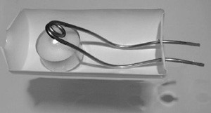
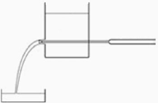
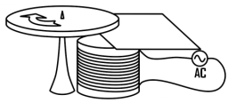

Problems
The IYPT problems are open-ended and enquiry-based. We are working to clarify how the special, breathtaking features of such problems have been coined.
What we know for certain is that at some point in early 1979, Evgeny Yunosov invited a group of undergraduate students at Moscow University to prepare a problem set for a new contest he was planning to launch on March 17, 1979 (which later grew into the YPT and IYPT.) The students were Andrei Mironov, Anton Zabrodin, Evgeny Ponomaryov, and Petr Tinyakov. “As far as I remember, there were various problems, and some had a specific answer. But the key idea was to offer a field for research. We were certainly influenced by a previous experience, including Kapitsa’s problems”, Anton Zabrodin recalled in August 2012. The new problems were overwhelmingly successful and remained the most vibrant and distinctive feature of the IYPTs ever since.
Before 1994, the IYPT probelms were circulating mostly in Russian. In many cases, no “standard” English editions existed, and not all “standard” Russian editions have been yet found. When re-published or translated in the past, the problems suffered from omissions and inaccuracies, and many problems were even misattributed. This section presents the problems for the early IYPTs, as they are restored from all traced multilingual sources. After 1993, the problems already existed in unique, “standard” English versions, that have been almost continuously preserved up to now.
The committee for problem selection would need the early problems for “a simple check of possible repeating of problems”, as decided in 2007. The historical IYPT problems, however, are useful for a much wider, global audience. The problems have been repeatedly credited as source of ideas for laboratory tasks, thematic activities in schools, graduation research projects, or even everyday physics teaching.
Our key aim in this section is to provide the critical editions of utmost reliability, by verifying and tracing each IYPT problem back to its original source.
1st IYPT (1988)
Source: Problems for the 1st IYPT (Critical edition, I. M.)Selected shortly before June 16, 1987, in Russian
Exemplary solutions for 1988 →
The sciences nourish young people,
Give consolation to the old,
They decorate a happy life,
And they protect one in misfortune...
M. V. Lomonosov
1. Invent yourself
Suggest original projects of technical and scientific use of high-temperature superconductivity.
2. “Eternal radio”
Develop and construct a portable radio receiver that does not use power supplies. The usability parameter is x=P/Lm, where P is acoustic pressure at a distance of 1 m from the receiver, L is maximum linear dimension, and m is mass of the receiver.
3. Camera obscura
Make a group portrait of your team with a camera obscura. Validate the physical principles of achieving a good quality photograph with such a device.
4. Electric circuit
Several knots (n≤10) are interconnected with batteries of known EMF and r. Create a computer program to calculate the potential difference between the first and the second knot. Consider the time from the start of data input (tables of EMF and r values) to the moment of correct result output, as the quality criterion of the program.
5. Metrology
Determine the maximum precision of length measurement with a steel ruler.
6. Seller of vacuum
An enterprising star farer decided to supply physical laboratories worldwide with vacuum from cosmic space. What are the venture’s chances of being successful?
7. Sunset
The visible Sun disk is flattened at sunset. Measure these distortions experimentally and describe them. Calculate the theoretical ratio of horizontal and vertical dimensions of the Sun disk that is touching the horizon.
8. Color television
You have to construct a four-color television receiver. What colors would you choose as basic? Is it then necessary to modify the image capture equipment?
9. Ninth wave
“Before me are the waves of the sea.
There are so many. They are countless.”
B. Pasternak
Does the “Ninth wave” phenomenon exist? Clarify this question. As a starting point, you can use the ideas from the article “Troika, semyorka, tuz...” (Znanie — sila, 1987, No. 1, pp. 97—104.)
10. Self-ignition
“Yet also when a many-branched tree,
Beaten by winds, writhes swaying to and fro,
Pressing ’gainst branches of a neighbour tree,
There by the power of mighty rub and rub
Is fire engendered; and at times out-flares
The scorching heat of flame, when boughs do chafe
Against the trunks.”
Lucretius Carus
Thus the Roman philosopher has explained the origin of forest fires. Estimate the probability of such an ignition and its role among the factors that cause fires in nature, i.e. not caused by a human activity.
11. Incandescent lamp
It is said that two 60 W light bulbs shine brighter than three 40 W bulbs. Is it true? Investigate how a small change in supplied voltage will affect light emission and a light bulb’s lifetime.
12. Spring in a city
Spring begins in a city earlier than in the countryside. Describe the main causes of this phenomenon and make numerical estimations. In particular, what would happen if one day all snow from Moscow is removed to the countryside?
13. Heat transfer
Research the heat transfer through the vertical water column in the two cases: T1<T2 and T1>T2.
“1” is water column, “2” is heat insulating tube.
14. Mesoscopics
One of the mesoscopic effects is a significant change of the resistance of a two-dimensional metal sample at low temperatures, if just a single atom within the crystal lattice is displaced. This effect can be visually illustrated if one considers the following model: small flat mirrors, with reflection coefficients equal to 1, are placed in the knots of a two-dimensional lattice n×n, n>>1. Each mirror can exist in two positions only; it can be inclined at 45° clockwise or counter-clockwise.
The states of the mirrors change chaotically, so the laser beam incident on a lattice knot reflects perpendicularly from the knot in both directions with the same probability. Estimate how the output light power will change if one of the knots is replaced by an absolute light-absorbing element.
15. Copper coin
A 1-kopeck coin “fell out” of a space rocket and became an artificial planet. Estimate its lifetime as of a planet of the Solar System.
16. Trapped electrons
Several electrons (2≤n≤30) can freely move inside a circle of a radius R. What relative position of the electrons is stable?
17. Cagliostro’s resistor
Even a human being is a resistor for a school tester. Investigate the laws of parallel and series circuits with a school tester. (Traditionally, problem No. 17 has a humorous tone.)
2nd IYPT (1989)
Source: Problems for the 2nd IYPT (Critical edition, I. M.)Selected in final form between Dec. 1988 and early 1989
Exemplary solutions for 1989 →
Squamps are hunted from the inside only.
S. Lem
1. Invent yourself
Develop and construct a device for demonstrating the wave properties of sound in air.
2. Noon
Is it possible to call “noon” the moment in the middle of the time interval between sunrise and sunset? Using a calendar, you will easily notice that throughout the year this moment “drifts” relatively to a certain moment of time. Explain the cause of this effect.
3. Tides
Estimate the heights of the tides in the Black Sea on April 1, 1989.
4. Rolling friction
Investigate how the friction force depends on speed. To be more specific, consider the rolling of a wooden puck on wood (a wooden surface of a table.)
5. Clock
You have visited a planet and you plan to return to it in ten thousand or even in a million years. What clock would you leave on this planet to measure precisely the time of your absence from the planet?
6. Rainbow
Is it possible that three or more rainbows can appear on the sky simultaneously?
7. Sparks
When knives are sharpened on a grinding wheel, sparks fly away. Most often, a single spark bursts apart in all directions at the end of its flight. Explain the phenomenon.
8. Metro
Suggest the methods and measure the speed of a metro electric train midway between two stations. The same is to be done for a bus in which you are going, if there are no reliable distance signs on the route.
9. Astronaut
What maximum travel distance may an astronaut expect
- at the modern level of technical development?
- in the far future, when practically all technical difficulties will be overcome?
10. Aqueous planet
What amount of water may form a planet with a constant mass
- far from the Sun;
- in a distance of 1 AU from the Sun?
11. Mosquito
At what maximum altitude can a mosquito fly?
12. Sand in a tube
A glass tube is installed vertically and its lower end is tightly closed with a cap. The tube is filled with some sand. During what time T will the sand flow out of the tube, when the cap is opened? Investigate the dependence of T on the following parameters: size of sand grains d, length of the tube L, diameter of the tube D, at a constant degree of packing of sand (you have to introduce and validate this parameter on your own.) We ask you not to consider high degrees of packing for comparability of the results. It is preferred that 10 cm<L<1 m.
13. Electrolytic cell
Prepare some saturated solution of table salt NaCl. Immerse two carbon electrodes (sticks from manganese-zinc battery 373 (R20)) into it so that their metal contacts are not immersed into the solution. Investigate
- the current-voltage characteristic of the created electrolytic cell in the range of currents from 10 μA to 50 mA;
- how does the current-voltage characteristic change as the solution is diluted?
14. Fence
A remote large object is separated from you by a picket fence. It happens that you can see the object if you do not stay near the fence, but go along the fence in a car. Explain this phenomenon. What speed is sufficient if a is width of a fence board, b width of the gaps, L is distance to the fence (L>>a, b), γ is angular size of the remote object, γ>>(a+b)/L.
15. Electron
An electron with a velocity of v=3·105 m/s flies with an impact parameter d aside a metal ball with a radius of a few centimeters. The charge of the ball changes with time under a law q(t)=q0cosωt, where q0=10−3 C, ω=108 s−1. Build a dependence plot of the deviation angle φ of the electron on the impact parameter d.
16. Information
How many bits of information did you receive after having read the problems of a YPT? How many bits of information would you receive when looking at a geographic map with the size of a paper sheet?
17. Karlsson
With what rate should Karlsson eat jam not to get thinner during the flight?
3rd IYPT (1990)
Source: Problems for the 3rd IYPT (Critical edition, I. M.)Selected shortly before May 25, 1989, in Russian
Exemplary solutions for 1990 →
Victories do not attract him.
For him growth means: profound defeat
at the hands of ever greater adversaries.
R. M. Rilke
1. Invent yourself — a physical photo contest
Submit to a contest the photographs of a rapidly occurring physical phenomenon. Explain in your commentaries the physical value of these photographs.
2—4. Ball and piston
A horizontal piston oscillates up and down. The coordinate of the piston’s surface is defined with an expression x=x0cosωt. At an arbitrary moment, a small ball is dropped without initial speed onto the piston from a height H.
2. Up to what altitude will the ball bounce after the first collision with the piston? For this case, consider the collision as absolutely elastic, and H>x0.
3. The system “forgets” the initial conditions after a big number of collisions. Estimate up to what maximum altitude a ball may bounce after many collisions. What is the average bounce altitude? Consider that the surfaces of the ball and of the piston are not damaged at collisions.
4. Let a ceiling be at a height H above the piston. In this case, stationary solutions are possible. Find some of them and research their stability. Consider H=1 m, H>>x0, g=10 m/s2 for numerical estimations. Consider the restoration coefficient of ball collisions with the piston and with the ceiling, as k=0.8.
5. Planet
What is the maximum possible size of a cube-shaped planet?
6. Evaporation-condensation
A П-shaped soldered glass tube contains some water.
If there is an initial difference of water levels H, then the water levels will become equal after some time. Estimate the rate of this equalization for a given H and T=const,
- if there is no air in the tube
- if there is some air in the tube, at normal atmospheric pressure.
7. Cylinder in a tube
A cylinder is moving towards the closed end in a long tube filled with water.
The inner diameter of the tube is D, diameter of the cylinder is d, the cylinder length is L, D-d=h, L>D, h<<D. How does the resistance force depend on the speed of cylinder? Compare the theoretical estimations with the experimental results.
8. Segner’s wheel
A Segner’s wheel rotates due to the reactive force of streams flowing out of the nozzles, when the wheel is placed into the water. Will it rotate backwards in a reverse regime, if the water is sucked into the nozzles, not flowing out of them? It is recommended to look through the book Surely You’re Joking, Mr. Feynman! (a partial Russian translation can be found in the “Nauka i zhizn” magazine, 1986, No. 12.)
9. Franklin’s wheel
Rotation of a little metal bar with pointed spearheads in a well-known “Franklin’s wheel experiment” is explained by the existence of “electric wind”. Explain why the wheel rotates if one places it between the plates of a parallel-plate capacitor and charges the capacitor with an electrostatic generator. If the Franklin’s wheel is replaced with a dielectric disk, will such a disk rotate between the plates of a parallel-plate capacitor charged with an electrostatic generator?
10. Electret
150 years ago, M. Faraday predicted electrets as electrostatic analogues to permanent magnets. Manufacture an electret and research its properties.
11. Color of a cloud
“Clouds in the skies above, heavenly wanderers,
Long strings of snowy pearls stretched over azure plains!
Exiles like I, you rush farther and farther on...”
M. Yu. Lermontov
Explain the observed colors of white clouds and rain bearing clouds.
12. Border of a cloud
An observed border of a cloud is often sharp. It is especially evident from onboard an airplane. Evaluate the “diffuseness” of the cloud’s border.
13. Cosmonauts cloud (a fantasy with physical sense)
A large number of cosmonauts form a “cosmonauts cloud” in the outer space. Initially each of them has a football with him. Starting from a certain moment, cosmonauts begin throwing these balls one to another (without losing them). Describe the evolution of the “cosmonauts cloud”. In order not to limit your imagination, we offer you to choose on your own the initial conditions, the rules of throwing the balls, and other parameters of the “cloud”. The only important aspects are that the choice of model should be logically validated; the conclusions should be supported with quantitative estimations; the number of described evolutions should not exceed two.
14. Fractal?
A grandmother is winding woolen thread into a spherical thread ball. How does the mass of the ball depend on its diameter?
15. Light in a tube
Look through a glass tube at a light (tube diameter is ca. 5 mm, length is ca. 25 cm.) Explain the origin of the observed circles.
16. Interference
Take two photo plates (9×12 cm), well-washed from emulsion. If they are tightly pressed (lapped) one to another, the interference bands can be observed in the reflected light. If the plates are laid on the table and the upper one is pressed in the middle part with a finger, the interference pattern looks like concentric circles. When the finger is removed, the circles “run away” from the centre. Carry out such an experiment and explain the observed phenomena. Evaluate theoretically how fast do the circles “run away” as the loading is removed.
17. Scientific Organization of Labor — SOL
You have to hammer 1989 similar nails (l=50 mm, d=2.5 mm) into a wooden bar. What hammer would you choose to perform this job quicker and better? (More specifically: what are the mass of the hammer and the length of its handle?)
- for a pine bar
- for an oak bar.
4th IYPT (1991)
Source: Problems for the 4th IYPT (Critical edition, I. M.)Problems selected at an uknown time in 1990, in Russian
Exemplary solutions for 1991 →
Is this black currant?
No, it is red currant.
But why is it white?
Because it is still green.
1. Invent yourself
Propose a cycle of demonstrations and experiments that can help to explain and visually demonstrate the physical nature of sound waves and the properties of sound.
2. Fortune teller
When molten paraffin is made to drip from a candle into a saucer with water, different solidified shapes are obtained, like a “lens”, a “boat”, an “inkblot”. Study the shape of the solidified droplets in dependence of altitude of their fall.
3. Geyser
A strong ceramic resistor in the shape of a hollow cylinder is placed into water so that the axis of the cylinder is vertical, and the top plane is slightly below the water level. If electric current is passed through the resistor, the resistor, just like a geyser, periodically ejects portions of hot water upwards. Calculate and study experimentally the dependence of the eruption periods of the “geyser” on the power consumed by the resistor from the power supply unit.
4. Self excitation
A strong hum sometimes happens on the concerts of newbie rock bands, when the microphone appears close to the speaker that reproduces the signals amplified from this very microphone. How do the frequency and the amplitude of the produced sound oscillations depend on the distance between the microphone and the speaker, and on their mutual orientation?
5. Cosmic monument
A particular supercivilization is eager to create a cosmic monument, an isolated planetary system of three planets, of which one should move along a trajectory close to an equilateral triangle. What mutual ratios of masses and of velocities for planets would you recommend? Develop also a project for a nearly square-shaped orbit.
6. Radiometer
Construct a device that measures the level of radiation. Use it to locate the major sources of radiation in everyday life.
7. Runner
Estimate the maximum speed that a person can run with. Compare it with the experimental values. In your opinion, what will be the world record in 100 m sprint in the year 2000?
8. Photograph of a television screen
The motion of a camera’s shutter and its speed may be studied through taking photographs of a television image. With this technique, measure the exposure time of your camera and the speed of the shutter.
9. Passive motor
An apple dropped from a balcony of a multi-storey building will calmly descend into the hands of your friend, if you attach to the apple a propeller cut out of dense paper. Explain the principle of work for such a parachute and study the dependence of the drag force on the descent rate and on the sizes of the propeller’s blades.
10. Blowgun
A small knitting needle, with two rounded pieces of polyurethane foam strung onto it, is shot out of a blowgun. Find the optimal blowpipe size to shoot such a projectile. What maximum projectile speed did you succeed to achieve?
11. Gold cube
A cubic planet of pure gold evolves around the Sun and keeps one of its facets turned towards it. Estimate the difference of temperatures of the planet facets.
12. Little boat
A light little boat floats on the surface of a liquid electrolyte. When electric current is passed through the electrolyte, the boat starts moving. Estimate the speed of the boat.
13. Wooden cube
A cube is cut out of a single piece of wood. The edge of the cube is much smaller than the diameter of the tree trunk from which it was cut out. Propose a method to determine the direction of wood fibers in the cube (the positive orientation of fibers is from the roots to the top of the tree.)
14. Moon
Determine experimentally the ratio of brightnesses (illuminances) of sunlit and dark sides of the Moon at different lunar phases. Compare them with the theoretical estimations.
15. Glider
Construct a glider that is driven by a piece of soap. Your glider must win in two competitions: in racing against time for a distance of 50 cm and in floating for a longest range in a given direction (separate gliders may be constructed for each competition.) The linear dimensions of the glider may not exceed 6.28 cm. In the second competition, the glider may not carry more than 0.5 g of soap.
16. Sunset
The Sun becomes red at sunset. What are the colors of the Moon, of Venus and of a bright star when they are they are low on the horizon?
17. Epigraph
In our opinion, the epigraph to the Tournament problems may serve as a basis for serious researches as well as for excellent jokes. We expect both of these from you.
5th IYPT (1992)
Source: Problems for the 5th IYPT (Critical edition, I. M.)Problems selected at an uknown time in 1991, in Russian
1. Invent it yourself
“Magnetic suspension” may be used in high speed trains of the future. Design and make an experimental model of such a suspension.
2. Unicycle
Circus actors often perform riding tricks on unicycles. There may be a range of wheel sizes. What is the largest possible diameter of the wheel?
3. The dam
There is a saying in Russian, “money goes like water through sand.” However, sand dams hold water. What should be the thickness of the dam in order to retain water whose level behind the dam is 10 m?
4. Swing
A special swing (trapeze) is used to train air and space pilots. This device is able to make a loop around the horizontal axis. What minimum time is necessary to build up the motion of the swing from the rest at the equilibrium position, to an amplitude of 180°?
5. High jumper
There is a saying in Russian, “one cannot jump over his own head.” But many high jumpers do this easily. Estimate the maximum height a man will be able to get over in high jumps and in pole vaulting, in the year 2000?
6. Matches
What is the minimum necessary mass of “sulfur” in the head of a match to make it blaze up?
7. Steel rod
A steel rod 8 mm in diameter is bent at an angle of 90°. What is the position and value of the maximum local temperature rise?
8. Boiling
A tall cylindrical vessel is partly filled with water and is put with its open end into a wide-mouthed vessel which is also filled with water. If we get the water to the boiling point and then cool it down, the level of the water in the cylinder will change. Study experimentally the correlation between the height of the water column in the cylinder and the temperature, under repeated heating and cooling. Explain the phenomena observed.
9. Fountain
There is a fountain called Samson in Peterhof. Water spurts out of it to a height of more than 20 meters. Suggest how to construct a fountain YPTon which could provide the maximum height of the spurt at a given power of the pump. What is the height if the power of the
pump is 1 kW?
10. Fuse
A thin brass wire can be used as a fuse. Find the correlation between the critical current and the wire diameter.
11. Hopfield model
Develop the algorithms for storing images in computer memory and for distinguishing them.
12. Butterflies
Butterflies find each other by smell. Estimate the “transmitter” strength and the “receiver” sensitivity of butterflies.
13. Topsy-turvy world
Some medical publications state that 0—2 months old babies see the objects around them up side down. Give your arguments “for or against.”
14. Laser
A laser beam is directed perpendicularly to the wall of a transparent glass tank filled with water. If the beam passes through the tank above or below the level of the water in the tank, we can observe a spot on the screen behind the tank. If the beam passes along the level of the water we observe a vertical line. Explain the origin of the line and calculate its parameters.
15. Incandescent lamp
Estimate the amplitude of temperature variations of the spiral filament of a light bulb powered by alternating current.
16. The depth of field
Find experimentally the dependence of the depth of field of a camera on the aperture diameter of the objective. Give the theoretical explanation of the dependence obtained.
17. Rain bubbles
Some people suppose that if there are bubbles on the surfaces of water pools during the rain, the rain will be long, but others think they are a sign of the close end of the rain. Who is right?
6th IYPT (1993)
Source: Problems for the 6th IYPT (Critical edition, I. M.), Задания 1993 1, Задания 1993 2Problems selected in November 1992 (in Russian), later translated into English
Exemplary solutions for 1993 →
1. Think up a problem yourself
Invent a problem in which an object is moving in some way and then changes its state of motion abruptly as a result of some influence. In this process interesting phenomena may arise which you must explain by, for example, making experiments and performing the necessary calculations.
2—5. Gravitation
Imagine that the gravitational constant G decreases slowly from April 1, 1993 until May 1, 1994 by 10% and keeps this value afterwards. How would this process in the given time interval and up to the date of the VI International YPT opening affect the universe as a whole and, in particular,
2. the Sun;
3. the Earth;
4. aviation and astronautics;
5. things important for you personally.
6. Gagarin’s record
In April 1961 Yury Gagarin set a world record for the fastest round-the-world orbit space flight. Suggest the cheapest way of beating this record. Note that not every record may be officially recognized.
7. Pressure and temperature
Explain why the pressure inside a house and outdoors are practically the same or become equal briefly, while the temperature may be substantially different. What is the characteristic equalizing time for pressures and temperature in- and outdoors? What is the answer to this question in the case of spacecraft?
8. Dominoes
Dominoes are placed vertically at a small distance from each other in a long row on a table surface. Make the first domino fall and the “wave of the falls” will proceed along the row. Calculate and measure experimentally the maximum speed of this wave.
9—10. Gun
The picture shows an electromagnetic gun circuit. It can launch metal rings.
(S, C, K) is a power supply consisting of
S, a source of constant voltage in the range 10—300 V,
C, a capacitor with C=1000 μF,
K, a switch;
L is an induction coil;
F is a ferromagnetic core;
R is a metal ring projectile with mass from 1 to 100 g.
Cn is a converter (some device that converts the energy passing from the capacitor to inductance L in a way you need.) This element does not contain energy sources. It may be completely absent from your gun.
You are to construct, make and demonstrate the electromagnetic gun. It is worth mentioning that the demonstration of your gun will take place with the power supply (elements S, C and K) presented by the Organizing Committee of the YPT. Develop two variants of the gun:
9. A long-range gun is to be constructed to shoot a ring to a maximum altitude. The control parameter is the quantity H=kh/U2, where k=10000 V2, h is the height of the projectile, U is the voltage to which the capacitor is charged.
10. A gun-lift is to be constructed to achieve the maximum work of lifting a weight (ring). The control parameter is W=mgh, where m is the mass of the ring, g=10 m/s2.
11. Recharge
You are given a capacitor C=1000 μF charged to 10 V and an uncharged capacitor Cx=1 μF. Using a self-constructed device containing no energy sources charge the capacitor Cx to the maximum possible voltage.
12. Transmission of energy
You are given a capacitor C=1000 μF charged to 300 V. Transmit without wires to a distance of 5 meters the largest possible proportion of the energy stored in the capacitor and measure it. Your device should be without energy sources.
13. Microwave oven
Why it is not recommended to cook eggs with unbroken shells in a microwave oven?
14. Boiling
A metal ball at room temperature is plunged into a thermos filled with liquid nitrogen. Describe the observed process of intense vaporization of nitrogen and find the time dependence of vaporization intensity q(t) [gs−1]. We ask you to use balls from 2 to 4 cm in diameter.
15. Fence
A picture of a moving bicycle wheel is strongly distorted by being observed through a fence. How much is the wheel distorted and why?
16. Grand Unification
According to modern views Grand Unification is possible at energy of about 1024 eV. Estimate the parameters of an accelerator capable of producing particles of such energy.
17. Karate
Karate is power, speed, force and beauty! Develop objective quantitative criteria making it possible to confer a “black belt” to a karate fighter. Maybe, you’ll become the inventor of a BB (black belt) device badly needed by referees or you’ll create a KM (karate meter) complex which is even more necessary for karate fighters for improving their skill.
7th IYPT (1994)
Sources: Rozhledy mat.-fyz. 71, 1993/4, 5, 243—249, Dev. Tal. in Phys., 28—30, 1995Problems selected at an uknown time in 1993, possibly in Russian
Exemplary solutions for 1994 →
Think up a problem yourself (problems 1, 2, 3). Invent yourself and solve a problem on the given theme.
1. Optics
Think up and solve a problem connected with employing a thin lens of a large focal length.
2. Compass
“In sledge trips we use liquid compasses, the most exact of the small ones. But you understand of course that due to proximity to the magnetic pole the arrow usually points downwards. To make it horizontal, its opposite end is balanced with a weight.” (From the letter of Cherry-Garrad, member of the last expedition of R. Scott). Use the context of this quotation to formulate a problem.
3. Magnetism
A cylindrical permanent magnet falling inside a copper tube is found to move at an almost constant velocity, the slower the thicker and the walls of the tube. Use this fact to formulate a problem (See also 14).
Gravitation machine (problems 4, 5, 6). A horizontal plate (a vibrator) oscillates harmonically up and down. A steel ball put an the surface of the plate starts jumping higher or lower. For the experimental device one may successfully use a ferrite core in a coil connected to an alternating current generator (a sound generator). The butt-end of the ferrite core will play the part of the vibrating horizontal plane. Steel balls of diameter 1 or 2 mm are suitable for the experiment. The glass tube approximately 1 m long can also be very helpful.
4. Upper boundary
Measure experimentally the maximum height to which the ball rises to and explain the result.
5. Distribution function
Determine experimentally what part of a sufficiently large time interval the ball is in the range of heights H, H+dH and explain the result.
6. Acceleration
The mechanical energy of the ball changes after every impact. The mean mechanical energy (averaged over all successive impacts) increases at the beginning of the process and then tends to a constant value. Try to obtain experimentally the time dependence of the mean mechanical energy of the ball.
7. Aspen leaf
Even in windless weather aspen leaves tremble slightly. Why does an aspen leaf tremble?
8. Superball
A highly elastic ball (a superball) falls on a horizontal surface from a small height (5 cm or less) and recoils several times. What is the number of impacts of the superball against a table?
9. MeteoriteA meteorite of mass 1000 tons flies directly into the Sun. Can modern instruments register the fact of its fall on the Sun?
10. Water domeA vertical water jet falls on the butt-end of a cylindrical bar and creates a bell-like water dome. Explain this phenomenon and evaluate the parameters of the dome.
11. Siphon
A rubber tube is used as a siphon to flow water from one vessel into another. The vessels are separated by a high partition and the levels of water in them are different. If one withdraws the tube from one vessel, lets the pole of air enter it and then puts the tube into the water again, the action of the siphon may be resumed or not. Investigate this phenomenon.
12. Boiling
Put a metallic ball heated to the temperature 150 °C — 200 °C into hot water at the temperature close to 100 °C and observe the process of intensive evaporation of the water. Explain the observed phenomenon.
13. Spirits
A closed vessel (a bottle) contains spirits — pure or substantially diluted by water. Suggest a method of estimation of the concentration of spirits without opening the vessel.
14. Magnetic friction
To investigate the phenomenon described in the problem 3 we suggest to create the device containing the following elements:
- a copper plate (or a set of plates) 0.3 to 15 mm thick. The length and the width of the plate may be chosen according to one’s convenience, but they should be large enough to avoid the effect of the boundaries;
- a cylindrical electromagnet with a flat butt-end;
- a device providing free motion of the flat butt-end of the electric magnet over the horizontal surface of the copper plate. It is very important that the gap between the magnet and the plate is small as possible and constant everywhere;
- the push providing the uniform motion of the magnet at a given velocity over the plate surface.
15. Transmission of energy
Transmit without wires to a distance of 3 meters the largest possible part of the energy stored in a capacitor having capacity of C=10 μF charged to voltage U=100 V. Measure this energy. Your device should not contain energy sources. Naturally the capacitor itself must not be transported.
16. The Moon and the Sun
“If you are asked what is more important, The Sun or the Moon, you should answer the Moon. For the Sun shines in daytime when there is enough light without it,” says a joke. When is it possible to see the Sun and the Moon at the same time? Calculate the schedule of the events for the European countries during 1994.
17. Straw
The Russian proverb says: “Had I known the place where I fell, I would have laid some straw there.” How much straw should be laid to guarantee a safe fall?
8th IYPT (1995)
Sources: Školská Fyzika, 1994/1995, 3, 70—71, Rozhledy mat.-fyz. 72, 1995, 2, 102—104, Dev. Tal. in Phys., 93—94, 1995Selected at the Preparatory Seminar in Warsaw on Oct. 13—15, 1994
Exemplary solutions for 1995 →
1. Think up a problem yourself (paradox)
Try to puzzle your rivals by a paradoxical physical experiment. (The coefficient of the opponent challenging for this problem is 2.5).
2. Boiling water
Some people say it is important to put a lid on the pot when you want to boil water for tea to save energy and time. Investigate this phenornenon and determine the energy and time saving.
3. Drop
A drop of salted water drying on a smooth surface creates a system of rings. Investigate and explain this phenomenon.
4. Gravitational spacecraft
A spacecraft (having a shape of a dumb-bell of variable length) can shift from the Earth orbit (300 km above the Earth surface) to the Moon orbit without the use of jets. Calculate the time taken by such a manoeuver.
5. Sound
Transfer the electric energy stored in a capacitor of 100 μF charged to the voltage of 30 V into the energy of the sound, with the highest efficiency possible. No external energy sources are allowed. Determine the fraction of energy converted into sound in the discharge.
6. Curtain
A light curtain (light scatters on dust particles) is used in some theatres. Suggest the design of a light curtain, which allows its effective action with the minimum power supplied for one meter of stage width?
7. Three discs
Investigate collisions of three homogeneous, rigid discs which can move in a plane. At first two discs are at rest. The third disc:
- collides at exactly the same time with two other discs,
- collides at first with one of the discs.
8. Carpet
When a carpet is rolled into a cylinder it sometimes unrolls by itself or with the help of a gentle push. Determine the factors on which the speed of the rolling carpet depends.
9. Ice creamObtain super-cooled water in an experimental setup. By how many degrees below 0 °C did you manage to super-cool it? What can be the record in this experiment? Determine the freezing point of water.
10. Cathode-ray tubeWhile a well-known physicist A. First watched a football match by TV, another well-known physicist B. Second made a hole of diameter 0.001 mm in the cathode-ray tube. Did A. First manage to see the football match up to the end?
11. Moon light
It is possible to set paper on fire using a lens and solar radiation. Could it be possible using lunar instead of solar light? If yes—invent an optimal optical system for such a purpose. If not—what should the Moon be like, for being this possible?
12. Tinder box
When someone strikes two pieces of flint rock, sparks are created. Investigate and explain this phenomenon.
13. Air lens
Lenses are usually made of solids and sometimes made of liquids. Construct an optical lens made of air in such a way that light can travel through the lens without crossing any material but air. Determine on which factors the focal length of an air lens depends.
14. Frozen lake
The water surface of a lake is in winter exposed to cold air at a fixed temperature below zero. There is no wind. Determine the thickness of the ice layer as a function of time.
15. Bottle
A plastic bottle of a capacity between 1 and 2 litres completely filled with water is “accidentally” dropped on the floor from the height H=1 m. What maximum height can the spray reach and why? Determine the minimal height from which the bottle should be dropped to burst?
16. Oscillation of plates
Water has been poured on a horizontal glass plate and a second glass plate placed on it. If the lower plate is oscillating in a horizontal plane, at certain amplitudes and frequencies, the upper plate begins to oscillate in vertical direction. Investigate and describe this phenomenon. Is there any difference when you use another liquid?
17. Epic hero
An epic Russian hero Ilya Muromets had once thrown his mace weighing forty poods (1 pood = 16 kg) and in forty days this mace fell at the same place. Estimate the parameters of the throw of the hero.
9th IYPT (1996)
Source: Turnaj mladých fyzikov : štatút a úlohy, 1996, 37—39Selected shortly before Dec. 1995
Exemplary solutions for 1996 →
1. Invent yourself
Invent and solve yourself a problem concerning the ozone holes.
2. Paper clot
Crumple arbitrarily a sheet of paper A4 in your hand. This clot can be approximated by a sphere. Making many of this clots and measuring their average diameters a histogram of distribution of diameters can be plotted. Try to explain the result obtained. Make more comprehensive investigation of the dependence of the average diameter of a clot on the parameters which you consider important.
3. Cycle racing
According to the forecast of specialists two very strong and “absolutely identical” sportsmen had to show equal time in a highway race for 100 km. But, alas, one sportsman lagged behind. Later it was found out that some malefactor adjusted a nut of mass 5 g to the rim of the rear wheel of his bicycle. For what time is the victim?
4. Self formation of a pile
A horizontal rigid plate vibrates vertically at a frequency of the order of 100 Hz. A cone-shaped pile of fine dispersed powder (e.g. lycopod or talc) which is heaped up on the plate remains stable at small amplitudes of the vibration. If the amplitude is increased the cone decays. Further increase of the amplitude yields a distribution confined by a sharp border and at still higher amplitudes a pile appears again. Investigate and explain this phenomenon.
5. Auto oscillations
Produce and investigate auto oscillating system containing thermistor as a single non-linear element.
6. Water generator
If some volume of water is frozen from one side, a potential difference appears across the ice-water frontier. Measure this potential difference and explain the phenomenon.
7. Sun
In the centre of the Sun suddenly an extra quantity of energy is produced which is equal to the energy emitted by the Sun per year. How will the parameters of the Sun observed on the Earth change during one year?
8. Surface informationDevelop a method for transferring information by the waves on the surface of water. Investigate the angular characteristics of the emitter and the receiver (the antennas) which you constructed.
9. Floor-polisherA device stands on two identical disks lying flat on a horizontal surface. The disks can rotate in opposite directions at a given velocity. Investigate how the value of a force providing a uniform motion this device along a horizontal plane depends on the velocity of this motion and the velocity of rotation of these disks.
10. Soap bubbles
Dip the ring of a children’s toy for blowing out soap bubbles into a soap solution and blow on the film formed in the ring. At what velocity of the air flux blown into the ring will the bubbles form? How must the velocity of the air flux be adjusted to produce the bubble of maximum size?
11. Candle
Some candles twinkle before dying out. Investigate and explain this phenomenon.
12. Motor car
A car driven at constant power moves onto a wet section of a straight road. How will its speed change when the thickness of the water layer increases slightly and linearly with the distance?
13. Grey light
Construct a source of light which would seem to be grey.
14. Coherer
It is known that a glass tube with two electrodes and metallic filings between them (coherer) has different resistance in d.c. and a.c. circuits. Investigate the frequency dependence of the coherer’s resistance.
15. Salt water oscillator
A cup with a small hole in its bottom containing salt water is partially immersed in a big vessel with fresh water and fixed. Explain the mechanism of the observed periodical process and investigate the dependence of its period on different parameters. To visualize the process, the water in the cup should be coloured.
16. Hail
Explain the mechanism of hail formation and propose your own method to prevent the hailing.
17. Gloves
Some people refuse to wear gloves in winter because they suppose to feel colder than without gloves. Others prefer to wear mittens instead. What is your opinion?
10th IYPT (1997)
Source: Školská fyzika, 1996/1997, 1, 99—100, Vlado Koutny ca. 1999Problems selected at an unkown time
Exemplary solutions for 1997 →
1. Invent yourself
Construct and demonstrate a device which moves in a definite direction under chaotic influence.
2. Coin
From what height must a coin with heads up be dropped, so that the probability of landing with heads or tails up is equal?
3. Paper
How does the tensile strength of paper depend on its humidity?
4. Electron beam
An electron beam is cast upon a planparallell plate of known homogenous material. Some of the electrons get through it, some do not. Try to simulate processes taking place, e.g. using Monte Carlo method and compare your results with the ones described in literature.
5. Blue blood
Human blood is known to be red, but the veins seem to be blue. Explain this phenomenon and illustrate it by a model.
6. Magic tube
A compressor blows air into Ranque-Hilsch T-shaped tube at a pressure of 0.5 MPa or higher so that the air begins to circulate. In such a case hot air is coming out from one end of the tube and cold air from the opposite one. Find out which end of the tube is the “hot” one and explain the difference of the temperatures obtained. Investigate the parameters this difference depends on.
7. Water jet
A water jet streaming vertically downwards from a tube is divided into drops at some distance from the tube. Choose the conditions under which the length of the unseparated jet is largest. What maximum length did you obtain?
8. FloatationA piece of chocolate, which is dropped into a glass of soda water, periodically sinks and goes back to the surface. Investigate the dependence of the period of these oscillations on various parameters.
9. Jet-spreadA water jet falling onto a horizontal plane spreads out radially. At some distance from the center the thickness of the layer increases dramatically. Explain the phenomenon.
10. Cooling the Earth
How would the temperature of the Earth change with time, if the Sun suddenly stopped radiating?
11. Candle generator
Construct a device for charging an electric capacitor (1000 μF / 100 V) using the energy of a candle burning for a period of one minute.
12. Static friction
A force of motion friction is known to be independent on the rubbing surface area of a body. How does the static friction depend on the rubbing surface area?
13. Tea cup
If one fills a cup with hot tea (60 °C — 80 °C), a thin layer of steam emerges above the surface. One can see that some parts of the steam layer disappear suddenly and reappear after a few seconds. Investigate and explain this phenomenon.
14. Rain
On a long-time exposure photograph of night rain taken in the light of a projector, the tracks of drops appear interrupted. Explain this phenomenon.
15. Cell and accumulator
How does the voltage-current characteristics of a cell and of an accumulator change during discharging?
16. Roget’s spiral
The Roget’s Spiral is a device where a source of current is connected to a vertically suspended spring, the lower end of which dipped into mercury. Mercury is a highly dangerous chemical substance and thus the experiments with it are not permitted. Substitute the mercury with a less dangerous substance and investigate the functioning of this device.
17. Leap
To make a leap it is necessary to squat. How does the height of a leap depend on the depth of the squat?
11th IYPT (1998)
Sources: Official version 97/10/15, Prouza 10-20-1997, Školská fyzika, 1996/1997, 3, 71—72, Vlado Koutny ca. 1999Selected at the Preparatory Seminar in Germany on Oct. 15, 1997
Exemplary solutions for 1998 →
1. Invent yourself
Construct an aeroplane from a sheet of paper (A4, 80 g/m2). Make it fly as far and/or as long as possible. Explain why it was impossible to reach a greater distance or a longer time.
2. Popping body
A body is submerged in water. After release it will pop out of the water. How does the height of the pop above the water surface depend on the initial conditions (depth and other parameters)?
3. Spinning disc
Investigate and explain the phenomenon of spinning annular disc as they progress down a straight, cylindrical rod. If the rod is moved upwards at a defined velocity, the disc spins at constant height. Investigate the mechanism.
4. Water streams
A can with three holes in the side-wall at the same height slightly above the bottom is filled with water. The water will escape in three separate streams. By gently touching the streams with a finger they may unite. Investigate the conditions for this to happen.
5. Water jet
If a vertical water jet falls down onto a horizontal plate, standing waves will develop on the surface of the jet. Investigate the dependence of this phenomenon on different parameters.
6. Mount Everest
Can you see Mount Everest from Darjeeling?
7. Air bubble
An air bubble rises in a water-filled, vertical tube with inner diameter 3 to 5 mm. How does the velocity of the rising bubble depend on its shape and size?
8. Trick
It is known that a glass filled with water and covered with a sheet of paper may be turned upside down without any loss of water. Find the minimum amount of water to perform the trick successfully.
9. Woven textiles
Look at a point-like light source through different woven textiles. Describe what you see. What is the explanation of the phenomenon?
10. Repeated freezing
While a vessel filled with an aqueous solution of a volatile fluid, e.g., ammonia, ethanol or acetone, is being cooled, repeated freezing and melting may be observed near the surface. Describe and explain the phenomenon.
11. Current system
In a Petri dish (shallow bowl), small metal balls, e.g., 2 mm in diameter, are immersed in a layer of castor oil. The inner rim of the dish contains an earthed metal ring. Above the centre of the dish there is a metal needle which does not touch the oil surface. Investigate what happens when the voltage between needle and earth is about 20 kV. Warning: The high voltage should be obtained by means of a safe generator, e.g., an electrostatic generator!
12. Powder conductivity
Measure and explain the conductivity of a mixture of metallic and dielectric powders with various proportions of the two components.
13. Rope
How is it possible that a very long and strong rope can be produced from short fibers? Prepare a rope from fibers and investigate its tensile strength.
14. Water rise
Immerse the end of a textile strip in water. How fast does the water rise in the strip and what height does it reach? In which way do these results depend on the properties of the textile?
15. Luminescent sugar
Investigate and explain the light produced when sugar crystals are pulverized. Are there other substances with the same property?
16. Strange motion
Make a mixture of ammonium nitrate and water, proportion 5 to 1. When the mixture is heated to about 100 °C it melts. When it cools, it crystallizes and you may observe a strange motion below the surface. Investigate and explain the phenomenon. Safety rules: Do not heat the ammonium nitrate without water, preferably use a water bath! Use protection glasses during the experiment!
17. Icicles
Investigate and explain the formation of icicles.
12th IYPT (1999)
Sources: Vlado Koutny: official text, Nov. 29, 1998, Prouza 12-22-1998, univie.ac.at 12.03.99 (HK), Školská fyzika, 2000, 1, 95—96Selected at the Preparatory Seminar in Vienna on Nov. 29, 1998
Exemplary solutions for 1999 →
1. Rotation
A long rod, partially and vertically immersed in a liquid, rotates about its axis. For some liquids this causes an upward motion of the liquid on the rod and for others, a downward motion. Explain this phenomenon and determine the essential parameters on which it depends.
2. Ionic motor
An electrolyte (an aqueous solution of CuSO4, NaCl, ...) in a shallow tray is made to rotate in the field of a permanent magnet (a small “pill” placed under the tray). An electric field is applied from a 1.5 V battery in such a way that one electrode is in the form of a conducting ring immersed in the electrolyte — the other is a tip of a wire placed vertically in the centre of the ring. Study the phenomenon and find possible relationships between the variables.
3. Magic motor
Construct a DC motor without a commutator, using a battery, a permanent magnet and a coil. Explain how it functions.
4. Soap film
Explain the appearance and development of colours in a soap film, arranged in different geometrical ways.
5. Dropped paper
If a rectangular piece of paper is dropped from a height of a couple of meters, it will rotate around its long axis whilst sliding down at a certain angle. What parameters does the angle depend on?
6. Singing glass
When rubbing the rim of a glass containing a liquid a note can be heard. The same happens if the glass is immersed in a liquid. How does the pitch of the note vary depending on different parameters?
7. Heated needle
A needle is hanging on a thin wire. When approached by a magnet, the needle will be attracted. When heated, the needle will return to its original position. After a while the needle is attracted again. Investigate this phenomenon, describe the characteristics and determine the relevant parameters.
8. Energy converter
A body of mass 1 kg falls from a height of 1 m. Convert as much as possible of the released potential energy into electrical energy and use that to charge a capacitor of 100 µF.
9. Air dryer
During a time span of 4 minutes collect as much water as possible from the air in the room. The mass of the equipment must not exceed 1 kg. Its initial temperature should be equal to ambient (room) temperature. The water should be collected in a glass test tube, provided by the jury.
10. Charged balloon
An air-filled balloon rubbed with wool or dry paper may stick to the ceiling and stay there. Investigate this phenomenon and measure the charge distribution on the surface of the balloon.
11. Billiard
Before a pool-billiard game starts, 15 balls form an equilateral triangle on the table. Under what conditions will the impact of the white ball (16th ball) produce the largest disorder of the balls?
12. Flour craters
If you drop a small object in flour, the impact will produce a surface structure which looks like a moon crater. What information about the object can be deduced from the crater?
13. Gas flow
Measure the speed distribution of the gas flow in and around the flame of a candle. What conclusions can be drawn from the measurements?
14. Wheat waves
The wind blowing through a wheat field creates waves. Describe the mechanism of the wave formation and discuss the parameters which determine the wavelength.
15. Bright spots
Bright spots can be seen on dew drops if you look at them from different angles. Discuss this phenomenon in terms of the number of spots, their location and angle of observation.
16. Liquid diode
Make an electrochemical diode and investigate its properties, in particular the frequency dependence.
17. Sound from water
When you heat water in a kettle you hear a sound from the kettle before the water starts to boil. Investigate and explain this phenomenon.
13th IYPT (2000)
Source: metal.elte.hu 2000Selected at the Preparatory Seminar in Visegrád on October 22—24, 1999
Exemplary solutions for 2000 →
1. Invent for yourself
Suggest a contact-free method for the measurement of the surface tension coefficient of water. Make an estimate of the accuracy of the method.
2. Tuning fork
A tuning fork with resonant frequency of about 100 Hz is struck and held horizontally, so that its prongs oscillate up and down. A drop of water is placed on the surface of the upper prong. During the oscillation of the tuning fork standing waves appear on the surface of the drop and change with time. Explain the observed phenomena.
3. Plasma
Investigate the electrical conductivity of the flame of a candle. Examine the influence of relevant parameters, in particular, the shape and polarity of the electrodes. The experiments should be carried out with a voltage not exceeding 150 V.
4. Splash of water
Measure the height reached by splashes of water when a spherical body is dropped into water. Find a relationship between the height of the splashes, the height from which the body is dropped, and other relevant parameters.
5. Sparkling water
Bubbles in a glass of sparkling water adhere to the walls of the glass at different heights. Find a relationship between the average size of the bubbles and their height on the side of the glass.
6. Transmission of signals
Using a bulb, construct the optimum transmitter of signals without any modulation of the light beam between transmitter and receiver. Investigate the parameters of your device. The quality of the device is defined by the product of the information rate (bits/sec) and the distance between transmitter and receiver.
7. Merry-go-round
A small, light, ball is kept at the bottom of a glass filled with an aqueous solution and then set free. Select the properties of the solution, so that a moving up time of several seconds is achieved. How will this time change if you put your glass on the surface of a rotating disk?
8. Freezing drop
Drops of melted lead or tin fall from some height into a deep vessel filled with water. Describe and explain the shape of the frozen drops as a function of height of fall.
9. Radioactivity
Use efficient methods to collect as much radioactive material as you can in a room. Measure the half-life of the material you have collected.
10. Liquid fingers
When a layer of hot salt solution lies above a layer of cold water, the interface between the two layers becomes unstable and a structure resembling fingers develops in the fluid. Investigate and explain this phenomenon.
11. Throwing stone
A student wants to throw a stone so that it reaches the greatest distance possible. Find the optimum mass of the stone that should be used.
12. Tearing paper
Tear a sheet of paper and investigate the path along which the paper tears.
13. Rolling can
A can partially filled with water rolls down an inclined plane. Investigate its motion.
14. Illumination
Two bulbs, 100 and 40 watts, respectively, illuminate a table tennis ball placed between them. Find the position of the ball, when both sides of the ball appear to be equally lit. Explain the result.
15. Cooling water
Two identical open glasses, filled with hot and warm water, respectively, begin to cool under normal room conditions. Is it possible that the glass filled with hot water will ever reach a lower temperature than the glass filled with warm water? Make an experiment to investigate this and explain the result.
16. Coloured sand
Allow a mixture of differently coloured, granular materials to trickle into a transparent, narrow container. The materials build up in distinct bands. Investigate and explain this phenomenon.
17. A strange sound
Pour hot water into a cup containing some cappuccino or chocolate powder. Stir slightly. If you then knock the bottom of the cup with a teaspoon you will hear a sound of low pitch. Study how the pitch changes when you continue knocking. Explain the phenomenon.
14th IYPT (2001)
Source: tapiolanlukio.fi Nov. 12 2000, iypt.org ca. Apr. 17, 2001Selected at the Preparatory Seminar in Finland on Oct. 13—15, 2000
Exemplary solutions for 2001 →
1. Electrostatic motor
Is it possible to create a motor which works by means of an electrostatic field? If yes, suggest how it may be constructed and estimate its parameters.
2. Singing saw
Some people can play music on a handsaw. How do they get different pitches? Give a quantitative description of the phenomenon.
3. Tuning dropper
Make the music resonator shown in the picture.
Investigate the conditions that affect the pitch. Can you observe amplification of external sounds? If yes, how can you explain this?
4. Dancing sand clock
Investigate the trickling of sand when a sand clock (egg-timer) is placed on a vibrating base.
5. Rubber heat machine
Investigate the conversion of energy in the process of deformation of rubber. Construct a heat machine, which uses rubber as the working element and demonstrate how it works.
6. Fractal diffraction
Produce, demonstrate and analyse diffraction pictures of fractal structures of different orders.
7. Cracks
When drying a starch solution, you will see cracks forming. Investigate and explain this phenomenon.
8. Speedometer
Two electrodes of different metal are immersed in an electrolyte solution.Investigate the dependence of the measured potential difference on the relative motion of electrodes and their shapes.
9. Pouring out
Investigate how to empty a bottle filled with a liquid as fast as possible, without external technical devices.
10. Water stream pump
Construct and demonstrate a water stream vacuum pump. What is your record value for the minimum pressure?
11. Rolling balls
Place two equal balls in a horizontal, V-shaped channel, with the walls at 90 degrees to each other, and let the balls roll towards each other. Investigate and explain the motion of the balls after the collision. Make experiments with several different kinds of ball pairs and explain the results.
12. Reaction
Make an aqueous solution of gelatine (10g gelatine in 90ml of water), heat it to 80 degrees C in a water bath and mix it with a solution of potassium iodide. Pour the solution in a test tube and cool it. Pour a solution of copper sulphate on the surface of the gel. Find a physical explanation to the observed phenomena.
13. Membrane electrolyser
In an electrolyser, containing a membrane which completely divides the space between two inert electrodes, the pH-value of the diluted salt solution will change substantially after electrolysis. Investigate how this difference depends on the pore size of the membrane.
14. Thread dropper
One end of a thread is immersed in a vessel filled with water. The other end hangs down outside without contact with the outer wall of the vessel. Under certain conditions, one can observe drops on that end of the thread. What are those conditions? Determine how the time of appearance of the first drop depends on relevant parameters.
15. Bubbles in magnetic field
Observe the influence of an alternating magnetic field (50 or 60 Hz) on the kinetics of gas bubbles in a vessel filled with water. The bubbles can be generated by blowing air into the water.
16. Adhesive tape
Investigate and explain the light produced, when adhesive tape is ripped from a smooth surface.
17. Seiches
Seiching is a phenomenon shown by long and narrow deep lakes. Due to changes in atmospheric pressure, the water of the lake can start moving in such a way that its level at both ends of the lake makes periodic motions, which are identical, but out of phase. Make a model that predicts the period of seiching (depending on appropriate parameters) and test its validity.
15th IYPT (2002)
Source: iypt.org.ua, before Jan. 8, 2002Selected at the Preparatory Seminar in Odessa on Oct. 11—14, 2001
Exemplary solutions for 2002 →
1. Heat engine
A tall glass cylinder is half-filled with hot water and topped up with cold water. A small ampule, containing a few drops of ether or alcohol (and closed off by a rubber pipette cap), is then put in. Describe the phenomena occurring in the system. How does the motion of the ampule change with time?
2. Spider’s web
A spider’s thread looks like a string of pearls. What is the reason for this? Make experiments to investigate the relevant parameters.
3. Flying colours
Why do flags flutter in the wind? Investigate experimentally the airflow pattern around a flag. Describe this behaviour.
4. Hazy
The colour of a distant forest appears not green, but hazy blue. What is the minimum distance at which this phenomenon is observed? How do weather conditions affect this? Is it possible that a forest can appear grey?
5. Pond-skater
It is known that unwettable small bodies can float on water due to the surface tension force. Construct a floating raft based on this principle and calculate its static and dynamic parameters.
6. Stop and start
Sometimes a flow of traffic can experience sudden stops and starts for no apparent reason. Build a physical model to explain why this occurs.
7. Ohm’s Law for a liquid
It is often said that electric current “flows”. Is this the only analogy between electric current and the flow of a liquid? Investigate theoretically and experimentally other analogies between these two things.
8. Charged sand
Fine, well-dried quartz sand is poured out of a short thin tube into a conical metallic vessel connected to an electrometer. Investigate the behaviour of the sand stream as the vessel fills up. What changes if the stream is lit by a UV-lamp?
9. Chromatography
Put a drop of coloured liquid on a piece of absorbant paper. Describe quantitatively the observed phenomena.
10. Sound cart
Construct and demonstrate a device that can be propelled solely by sound. Investigate its properties.
11. Equilibrium
Fill a glass with water up to the point where a convex meniscus is formed. Place a table tennis ball on the surface of the water. Investigate and explain the stability of its equilibrium. Repeat your experiment with other liquids?
12. Electroconductivity
How can you measure the electroconductivity of salt solutions without using direct contact electrodes? Analyse the problem and demonstrate your device.
13. Spinning ball
A steel ball of diameter 2—3 cm is put on a horizontal plate. Invent and construct a device, which allows you to spin the ball at high angular velocity around a vertical axis. The device should have no mechanical contact with the ball.
14. Torn sail
Determine the dependence of the efficiency of a sail on its degree of perforation. What would be the effect of using a fishing net as a sail?
15. Pulsating air bubble
Trap an air bubble of radius 1—2 cm under an inverted watch glass beneath a water surface. Introduce alcohol into the bubble through a thin tube, controlling and adjusting the rate of flow until the bubble pulsates rhythmically. Study the phenomenon and explain your observations.
16. Elastic pendulum
Study and describe the behaviour of a pendulum where the bob is connected to a spring or an elastic cord rather than to a stiff rod.
17. Bottle battle
Take two opened glass bottles of cola and knock one against the other. After a short while, the cola spurts out of one of the bottles. Investigate and explain the phenomenon.
16th IYPT (2003)
Source: Problems for the 16th IYPT (fyrisskolan.uppsala.se, Oct. 6, 2002)Selected at the Preparatory Seminar at Wik Castle on Oct. 4—6, 2002
Exemplary solutions for 2003 →
1. Motion of a kite
On windy days one can see kites flying in the wind. Often, one-string kites move an a stable track, which looks like a number 8. Why does a kite move in such a way? Are there other stable tracks?
2. Water drops
Investigate and explain the movement of raindrops on a window pane.
3. Transparent film
If you cover printed text with a piece of transparent polyethylene film you can still easily read it. As you gradually lift up the film, the text becomes increasingly blurred and may even disappear. Study the properties of the film. On what parameters of the film is the phenomenon based?
4. Bright spots
Blow a soap bubble and allow it to rest an a liquid surface or a glass plate. When illuminated by sunlight, bright spots can be observed on the bubble. Investigate and explain the phenomenon.
5. Bubbles at an interface
Certain liquids can be layered one above the other with a sharp interface between them. If the surface tensions of the liquids are different, then an interesting phenomenon can be observed. Blow bubbles of different sizes into the lower liquid and observe their behaviour near the interface. Investigate and explain the phenomenon.
6. Freezing soft drinks
On opening a container of cold soft (carbonated) drink the liquid inside sometimes freezes. Study the relevant parameters and explain the phenomenon.
7. Oscillating box
Take a box and divide it into a number of small cells with low walls. Distribute some small steel balls between the cells. When the box is made to oscillate vertically, the balls occasionally jump from one cell to another. Depending on the frequency and the amplitude of the oscillation, the distribution of the balls can become stable or unstable. Study this effect and use a model to explain it.
8. Heat engine
Construct a heat engine from a U-tube partially filled with water (or another liquid), where one arm of the tube is connected to a heated gas reservoir by a length of tubing, and the other arm is left open. Subsequently bringing the liquid out of equilibrium may cause it to oscillate. On what does the frequency of the oscillation depend? Determine the pV diagram of the working gas.
9. Falling chimney
When a tall chimney falls it sometimes breaks into two parts before it hits the ground. Investigate and explain this.
10. Tungsten lamp
The resistance of the tungsten filament in a light bulb shows a strong temperature dependence. Build and demonstrate a device based on this characteristic.
11. Light scattering
Construct an optical device for measuring the concentration of non-soluble material in aqueous colloid systems. Use your device to measure the fat content of milk.
12. Boiled egg
Construct a torsion viscometer. Use it to investigate and explain the differences in the ‘viscous’ properties of hens’ eggs that have been boiled to different extents.
13. Electro-osmosis
Develop a device that will drain wet sand, with the aid of an electrical voltage but without significant heating.
14. Rotating disk
Find the optimum way of throwing a ‘frisbee’ as far as possible. Explain your findings.
15. Vortices
Make a box that has a hole in its front wall and a membrane as its back wall. Hitting the membrane creates a vortex that propagates out from the hole. Investigate the phenomenon and explain what happens when two vortices interact.
16. Pot and ice
It is sometimes argued that to cool a pot effectively one should put ice above it. Estimate to what extent this is more effective than if the ice is put under the pot.
17. Prometheus Problem
Describe and demonstrate the physical mechanism, based on friction, which allowed our ancestors to make fire. Estimate the time needed to make fire in this way.
17th IYPT (2004)
Source: iypt.org, tmfsr.sk, Oct. 28, 2003Selected at the IOC Meeing in Modra, Harmonia on Oct. 17—18, 2003
Exemplary solutions for 2004 →
1. Misty
Invent and construct a device that would allow the size of a droplet of a mist to be determined using a sound generator.
2. Stubborn ice
Put a piece of ice (e.g. an ice cube) into a container filled with vegetable oil. Observe its motion and make a quantitative description of its dynamics.
3. Electric pendulum
Use a thread to suspend a suitable ball between the plates of a capacitor. When the plates are charged the ball will start to oscillate. What does the period of the oscillations depend on?
4. Dusty blot
Describe and explain the dynamics of the patterns you observe when some dry dust (e.g. coffee powder or flour) is poured onto a water surface. Study the dependence of the observed phenomena on the relevant parameters.
5. Sea-shell
When you put a sea-shell to your ear you can hear ‘the sea’. Study the nature and the characteristics of the sound.
6. Seebeck effect
Two long metal strips are bent into the form of an arc and are joined at both ends. One end is then heated. What are the conditions under which a magnetic needle placed between the strips shows maximum deviation?
7. Coin
Stand a coin on its edge upon a horizontal surface. Gently spin the coin and investigate the resulting motion as it settles.
8. Pebble skipping
It is possible to throw a flat pebble in such a way that it can bounce across a water surface. What conditions must be satisfied for this phenomenon to occur?
9. Flow
Using a dc source, investigate how the resistance between two metallic wires dipped into flowing water (or water solution) depends upon the speed and direction of the flow.
10. Two chimneys
Two chimneys stand on a box with one transparent side. Under each chimney there is a candle. A short period after the candles are lit one flame becomes unstable. Examine the case and present your own theory of what is happening.
11. String telephone
How do the intensity of sound transmitted along a string telephone, and the quality of communication between the transmitter and receiver, depend upon the distance, tension in the line and other parameters? Design an optimal system.
12. Kundt’s Tube
In a ‘Kundt’s Tube’ type of experiment the standing waves produced can be made visible using a fine powder. A closer look at the experiment reveals that the regions of powder have a sub-structure. Investigate its nature.
13. Egg White
White light appears red when it is transmitted through a slice of boiled egg white. Investigate and explain this phenomenon. Find other similar examples.
14. Fountain
Construct a fountain with a 1 m ‘head of water’. Optimise the other parameters of the fountain to gain the maximum jet height by varying the parameters of the tube and by using different water solutions.
15. Brazil Nut Effect
When a granular mixture is shaken the larger particles may end up above the smaller ones. Investigate and explain this phenomenon. Under what conditions can the opposite distribution be obtained?
16. Small Fields
Construct a device based upon a compass needle and use your device to measure the Earth’s magnetic field.
17. Didgeridoo
The ‘didgeridoo’ is a simple wind instrument traditionally made by the Australian Aborigines from a hollowed-out log. It is, however, a remarkable instrument because of the wide variety of timbres that it produces. Investigate the nature of the sounds that can be produced and how they are formed.
18th IYPT (2005)
Source: iypt.org, tmfsr.sk, July 6, 2004Selected at the IOC Meeing in Brisbane on July 1—2, 2004; released on July 6, 2004
Exemplary solutions for 2005 →
1. Dragonfly
Propose a model of how a dragonfly flies. Investigate the major parameters and validate your model.
2. The two ball problem
Two balls placed in contact on a tilted groove sometimes do not roll down. Explain the phenomenon and find the conditions, under which it occurs.
3. Avalanche
Under what conditions may an avalanche occur? Investigate the phenomenon experimentally.
4. Hydraulic jump
When a smooth column of water hits a horizontal plane, it flows out radially. At some radius, its height suddenly rises. Investigate the nature of the phenomenon. What happens if a liquid more viscous than water is used?
5. Mirage
Create a mirage like a road or desert mirage in a laboratory and study its parameters.
6. Noise
When a droplet of water or other liquid falls on a hot surface, it produces a sound. On what parameters does the sound depend?
7. The bouncing plug
A bathtub or sink is filled with water. Remove the plug and place a plastic ball over the plughole. As the water drains the ball starts to oscillate. Investigate the phenomenon.
8. Windcar
Construct a car which is propelled solely by wind energy. The car should be able to drive straight into the wind. Determine the efficiency of your car.
9. Sound in the glass
Fill a glass with water. Put a tea-spoon of salt into the water and stir it. Explain the change of the sound produced by the clicking of the glass with the tea-spoon during the dissolving process.
10. Flow rate
Combine powdered iron (iron filings) with a vegetable oil. Connect two containers with plastic tubing and allow the mixture to drain through the tube. Develop an external mechanism to control the flow rate of the mixture.
11. Water droplets
If a stream of water droplets is directed at a small angle to the surface of water in a container, droplets may bounce off the surface and roll across it before merging with the body of water. In some cases the droplets rest on the surface for a significant length of time. They can even sink before merging. Investigate these phenomena.
12. Ball spin
Spin can be used to alter the flight path of balls in sport. Investigate the motion of a spinning ball, for example a table-tennis or tennis ball, in order to determine the effect of the relevant parameters.
13. Hard starch
A mixture of starch (e.g. cornflour or cornstarch) and a little water has some interesting properties. Investigate how its “viscosity” changes when stirred and account for this effect. Do any other common substances demonstrate this effect?
14. Einstein - de Haas Experiment
When you apply a vertical magnetic field to a metallic cylinder suspended by a string it begins to rotate. Study this phenomenon.
15. Optical tunnelling
Take two glass prisms separated by a small gap. Investigate under what conditions light incident at angles greater than the critical angle is not totally internally reflected.
16. Obstacle in a funnel
Granular material is flowing out of a vessel through a funnel. Investigate if it is possible to increase the outflow by putting an “obstacle” above the outlet pipe?
17. Ocean “Solaris”
A transparent vessel is half-filled with saturated salt water solution and then fresh water is added with caution. A distinct boundary between these liquids is formed. Investigate its behaviour if the lower liquid is heated.
19th IYPT (2006)
Source: iypt.skSelected at an uknown time; released on Aug. 8, 2005
Exemplary solutions for 2006 →
1. Froth
Investigate the nature of the decay in height of the “froth” or “foam” on a liquid. Under what conditions does the froth remain for the longest time?
2. Shades
If small non-transparent objects are illuminated with light, patterns in the shadows are observed. What information can be obtained about these objects using these patterns?
3. Duck’s cone
If one looks at the wave pattern produced by a duck paddling across a pond, this reminds one of Mach’s cone. On what parameters does the pattern depend?
4. Whispering Gallery
The Whispering Gallery at St Paul’s Cathedral in London, for example, is famous for the fact that the construction of the circular gallery makes a whisper against its walls on one side of the gallery audible on the opposite side of the gallery. Investigate this phenomenon.
5. Probability
A coin is held above a horizontal surface. What initial conditions will ensure equal probability of heads and tails when the coin is dropped and has come to rest?
6. Wet cleaning
A wet rag is hard to drag when it is spread out and pulled across the floor. What does the resistive force depend on?
7. Airglider
A paper sheet is on a table. If one blows along the table the sheet begins to glide over it. Determine the flight characteristics of the paper.
8. Electrostatics
Propose and make a device for measuring the charge density on a plastic ruler after it has been rubbed with a cloth.
9. Sound and foam
Investigate the propagation of sound in foam.
10. Inverted pendulum
It is possible to stabilise an inverted pendulum. It is even possible to stabilise an inverted multiple pendulum (one pendulum on top of the other). Demonstrate the stabilisation and determine on which parameters this depends.
11. Singing tube
A tube open at both ends is mounted vertically. Use a flame to generate sound from the tube. Investigate the phenomenon.
12. Rolling magnets
Investigate the motion of a magnet as it rolls down an inclined plane.
13. Sound
Measure the speed of sound in liquids using light.
14. Cellular materials
Investigate the behaviour of a stream of fluid when it strikes the surface of a sponge-like material.
15. Heat and temperature
A tube passes steam from a container of boiling water into a saturated aqueous salt solution. Can it be heated by the steam to a temperature greater than 100 °C? Investigate the phenomenon.
16. Hardness
A steel ball falls onto a horizontal surface. If one places a sheet of paper onto the surface with a sheet of carbon paper on top of it, a round trace will be produced after the impact. Propose a hardness scale based on this method.
17. Magnetohydrodynamics
A shallow vessel contains a liquld. When an electric and magnetic field are applied, the liquid can start moving. Investigate this phenomenon and suggest a practical application.
20th IYPT (2007)
Source: Problems for the IYPT 2007 (iypt.org, July 16, 2006)Selected at the IOC meeting in Bratislava on July 16, 2006
Reference Kit for 2007 (enhanced edition, Aug. 29, 2015) →
Exemplary solutions for 2007 →
1. Filament
There is a significant current surge when a filament lamp is first switched on. Propose a theoretical model and investigate it experimentally.
2. Slinky
Suspend a Slinky vertically and let it fall freely. Investigate the characteristics of the Slinky’s free-fall motion.
3. Water jets
What can be observed when two water jets collide at different angles?
4. Spring thread
Pull a thread through the button holes as shown in the picture.
The button can be put into rotating motion by pulling the thread. One can feel some elasticity of the thread. Explain the elastic properties of such a system.
5. Razor blade
A razor blade is placed gently on a water surface. A charged body brought near the razor makes it move away. Describe the motion of the razor if an external electric field is applied.
6. Rheology
It has been said that if you are sinking in soft mud, you should not move vigourously to try to get out. Make a model of the phenomenon and study its properties.
7. Crickets
Some insects, such as crickets, produce a rather impressive sound by rubbing together two parts of their body. Investigate this phenomenon. Build a device producing a sound in a similar way.
8. Condensation
Water droplets form on a glass filled with cold water. Explain the phenomenon and investigate the parameters that determine the size and number of droplets on the glass.
9. Ink droplet
Place a droplet of ball pen ink on a water surface. The droplet begins to move. Explain the phenomenon.
10. Steam boat
A boat can be propelled by means of a candle and metal tubing with two open ends (an example is shown in the picture).

Explain how such a boat is propelled and optimize your design for maximum velocity.
11. Water ski
What is the minimum speed needed to pull an object attached to a rope over a water surface so that is does not sink. Investigate the relevant parameters experimentally and theoretically.
12. Fluid lens
Develop a fluid lens system with adjustable focus. Investigate the quality and possible applications of your system.
13. Balloon
Measure the change of the optical properties of the skin of a balloon during its inflation.
14. Earthquake
Suggest a mechanism that makes buildings resistant to earthquakes. Perform experiments and explain the results.
15. Blowpipe
Investigate the motion of a projectile inside a blowpipe. Determine the conditions for maximum exit velocity when blown by mouth.
16. Water cascade
Arrange a corrugated drainage pipe, or similar, on an incline. Allow water to flow through the pipe and then carefully stop the flow. Investigate the behaviour of the system when water is dropped into the pipe.
17. Ice bulge
Fill a plastic tray with water. When frozen, under certain conditions, a bulge can appear on the surface. Investigate this phenomenon.
21st IYPT (2008)
Source: Problems for 21st for IYPT, Croatia 2008 (iypt.org, Aug. 8, 2007)Selected at the IOC meeting in Seoul on July 12—13, 2007; released as Preliminary on July 18, 2007; as final on Aug. 8, 2007
Reference Kit for 2008 (final edition, May 28, 2008) →
Exemplary solutions for 2008 →
1. Tipcat
Place a small wooden stick over the edge of a desk. Hit the end of the stick overhanging the table so that it flies away. How is the flight distance related to the relevant parameters? What is the condition for a maximum horizontal distance?
2. Winged seed
Investigate the motion of falling winged seeds such as those of the maple tree.
3. Pin-hole camera
Study the characteristics of a pin-hole camera and find the conditions for the camera to achieve optimum image quality.
4. Cymbal
Discharging an electronic flash unit near a cymbal will produce a sound from the cymbal. Explain the phenomenon and investigate the relevant parameters.
5. Voltaic cell
Make a voltaic cell using paper tissues as a salt bridge. Study and explain how the electromotive force of this battery depends on time.
6. Liquid stain
When a drop of liquid such as coffee dries on a smooth surface, the stain usually remains at the edge of the drop. Investigate why the stain forms at the edge and what parameters affect the characteristics of the stain.
7. Making a splash
A solid object is dropped into water from a height of 50 cm. Investigate the factors that would minimize the splash.
8. Astroblaster
When a large ball is dropped, with a smaller one stacked on top of it, onto a hard surface, the smaller ball will often rise much higher than it would if dropped onto the same surface by itself while the larger ball hardly bounces at all. Investigate this phenomenon and design a multiple-ball system, using up to 4 balls, that will reach the greatest elevation of the top ball.
9. Flute
Drill a hole into the side of a tube that is open at one end and produce a sound by blowing the open end. Investigate the pitch and timbre of the sound of your flute and how they depend on the position and the diameter of the hole.
10. Kaye effect
When a thin stream of shampoo is poured onto a surface, a small stream of liquid occasionally leaps out. This effect lasts less than a second but occurs repeatedly. Investigate this phenomenon and give an explanation.
11. Gutter
When a thin layer of water flows along an inclined gutter different wave patterns are sometimes observed. Study this phenomenon.
12. Geyser
Support a long, vertical tube containing water. Heat the tube directly from the bottom and you will observe that the water erupts. Arrange for the water to drain back into the tube to allow repeated eruptions. Investigate the parameters that affect the time dependence of the process.
13. Spinning ice
Pour very hot water into a cup and stir it so the water rotates slowly. Place a small ice cube at the centre of the rotating water. The ice cube will spin faster than the water around it. Investigate the parameters that influence the ice rotation.
14. Faraday generator
Construct a homopolar electric generator. Investigate the electrical properties of the device and find its efficiency.
15. Gelation
Hot gelatine solution becomes a gel upon cooling. Investigate the electric conductivity as a function of temperature as it gels. Explain the results obtained.
16. Black spoon
Blacken a spoon using a candle flame. If you immerse the spoon in water it appears glossy. Investigate the phenomenon and determine the optical properties of such a “mirror”.
17. Heat engine
Build a heat engine powered only by the difference between the day and night air temperatures without using direct sunlight. Determine its efficiency.
22nd IYPT (2009)
Source: Problems for the 22nd IYPTSelected at the IOC meeting in Trogir on May 28—29, 2008; released on May 31, 2008
Reference Kit for 2009 (final edition, July 28, 2009) →
Exemplary solutions for 2009 →
1. Stearin engine
A candle is balanced on a horizontal needle placed through it near its centre of mass. When the candle is lit at both ends, it may start to oscillate. Investigate the phenomenon. Maximize the output mechanical power of the system.
2. Coupled compasses
Place a compass on a table. Place a similar compass next to the first one and shake it gently to make the needle start oscillating. The original compass’ needle will start oscillating. Observe and explain the behaviour of these coupled oscillators.
3. Resonating modes
Place a mobile phone inside a metallic container with a hole in it. Investigate under what conditions the mobile phone starts to ring after calling it.
4. Ghostly images
When a photo is taken with a flash, bright “disks” may appear as shown in the picture. Investigate and explain the phenomenon.
5. Stop a drip
To prevent dripping from a bottle after pouring, it can be turned slightly. Investigate the motion of the bottle for no drop to fall.
6. Roundabout
Put a plastic cup on a thin layer of liquid on a flat solid surface. Make the cup rotate. On what parameters does the rotational deceleration of the cup depend?
7. Skateboarder
A skateboarder on a horizontal surface can accelerate from rest just by moving the body, without touching external support. Investigate the parameters that affect the motion of a skateboard propelled by this method.
8. Air pocket
A vertical air jet from a straw produces a cavity on a water surface. What parameters determine the volume and depth of the cavity?
9. Drying
Investigate the drying process of a vertical wet paper sheet. How does the boundary of drying move?
10. Optical tube
Look down a cylindrical metal tube which is shiny on the inside. You will notice dark and light bands. Investigate the phenomenon.
11. Transformers
The “simple transformer law” relates output voltage to input voltage and turns ratio. Investigate the importance of frequency and other parameters in determining the non-ideal behaviour of transformers.
12. Hot ball
Put a hot metal ball on parallel horizontal rails. The ball starts to move. Investigate the phenomenon.
13. Sand ripples
Investigate how the formation of sand ripples under shallow water depends on various parameters.
14. Bouncing drop
Investigate the motion of water droplets falling on a hydrophobic surface (e.g. coated with soot or teflon).
15. Electro-oscillator
A mass is hung from the middle of a horizontal wire. When a current is passed through the wire, the mass may start to oscillate. Describe and explain this phenomenon.
16. Electromagnetic motor
Attach a strong light magnet to the head of a steel screw. The screw can now hang from the terminal of a battery. Completing the circuit by a sliding contact on the magnet causes the screw to rotate. Investigate the parameters that determine the angular velocity of the screw.
17. Corrugation
After traffic has used an unpaved road for some time the surface of the road gets a “wave” structure with a well defined wavelength. Investigate and explain this phenomenon.
23rd IYPT (2010)
Source: Problems for the 23rd IYPT 2010 (iypt.org, July 31, 2009)Selected at the IOC meeting in Tianjin on July 28—29, 2009; released on July 30, 2009
Reference Kit for 2010 (final edition, July 16, 2010) →
Exemplary solutions for 2010 →
1. Electromagnetic cannon
A solenoid can be used to fire a small ball. A capacitor is used to energize the solenoid coil. Build a device with a capacitor charged to a maximum 50 V. Investigate the relevant parameters and maximize the speed of the ball.
2. Brilliant pattern
Suspend a water drop at the lower end of a vertical pipe. Illuminate the drop using a laser pointer and observe the pattern created on a screen. Study and explain the structure of the pattern.
3. Steel balls
Colliding two large steel balls with a thin sheet of material (e.g. paper) in between may “burn” a hole in the sheet. Investigate this effect for various materials.
4. Soap film
Create a soap film in a circular wire loop. The soap film deforms when a charged body is placed next to it. Investigate how the shape of the soap film depends on the position and nature of the charge. Investigate and explain the phenomenon.
5. Grid
A plastic grid covers the open end of a cylindrical vessel containing water. The grid is covered and the vessel is turned upside down. What is the maximal size of holes in the grid so that water does not flow out when the cover is removed?
6. Ice
A wire with weights attached to each end is placed across a block of ice. The wire may pass through the ice without cutting it. Investigate the phenomenon.
7. Two flasks
Two similar flasks (one is empty, one contains water) are each connected by flexible pipes to a lower water reservoir. The flasks are heated to 100 °C and this temperature is held for some time. Heating is stopped and as the flasks cool down, water is drawn up the tubes. Investigate and describe in which tube the water goes up faster and in which the final height is greater. How does this effect depend on the time of heating?
8. Liquid light guide
A transparent vessel is filled with a liquid (e.g. water). A jet flows out of the vessel. A light source is placed so that a horizontal beam enters the liquid jet (see picture). Under what conditions does the jet operate like a light guide?

9. Sticky water
When a horizontal cylinder is placed in a vertical stream of water, the stream can follow the cylinder’s circumference along the bottom and continue up the other side before it detaches. Explain this phenomenon and investigate the relevant parameters.
10. Calm surface
When wind blows across a water surface, waves can be observed. If the water is covered by an oil layer, the waves on the water surface will diminish. Investigate the phenomenon.
11. Sand
Dry sand is rather ‘soft’ to walk on when compared to damp sand. However sand containing a significant amount of water becomes soft again. Investigate the parameters that affect the softness of sand.
12. Wet towels
When a wet towel is flicked, it may create a cracking sound like a whip.Investigate the effect. Why does a wet towel crack louder than a dry one?
13. Shrieking rod
A metal rod is held between two fingers and hit. Investigate how the sound produced depends on the position of holding and hitting the rod?
14. Magnetic spring
Two magnets are arranged on top of each other such that one of them is fixed and the other one can move vertically. Investigate oscillations of the magnet.
15. Paper anemometer
When thin strips of paper are placed in an air flow, a noise may be heard. Investigate how the velocity of the air flow can be deduced from this noise?
16. Rotating spring
A helical spring is rotated about one of its ends around a vertical axis. Investigate the expansion of the spring with and without an additional mass attached to its free end.
17. Kelvin’s dropper
Construct Kelvin’s dropper. Measure the highest voltage it can produce. Investigate its dependence on relevant parameters.
24th IYPT (2011)
Source: Problems for IYPT 2011 (iypt.org, July 17, 2010)Selected at the IOC meeting in Gössing on July 16—17, 2010
Reference Kit for 2011 (final edition, July 29, 2011) →
Exemplary solutions for 2011 →
1. Adhesive tape
Determine the force necessary to remove a piece of adhesive tape from a horizontal surface. Investigate the influence of relevant parameters.
2. Air drying
Table utensils (dishes, cutlery, etc.), after being washed, dry differently. Investigate how the time of drying depends on relevant parameters.
3. Bouncing flame
Place a flame (e.g. from a Bunsen burner) between two charged parallel metal plates. Investigate the motion of the flame.
4. Breaking spaghetti
Find the conditions under which dry spaghetti falling on a hard floor does not break.
5. Car
Build a model car powered by an engine using an elastic air-filled toy-balloon as the energy source. Determine how the distance travelled by the car depends on relevant parameters and maximize the efficiency of the car.
6. Convection
In a container filled with a liquid, heat transport will occur when the bottom of the container is heated and the top surface is cooled. How does the phenomenon change when the container rotates about its vertical axis?
7. Cup drum
A plastic cup is held upside-down and tapped on its base. Investigate the sound produced when the open end of the cup is above, on or below a water surface.
8. Domino amplifier
A row of dominoes falling in sequence after the first is displaced is a well known phenomenon. If a row of “dominoes” gradually increases in height, investigate how the energy transfer takes place and determine any limitations to the size of the dominoes.
9. Escaping powder
When a hot wire is plunged into a beaker of water with powder (e.g. lycopodium) floating on the surface, the powder moves rapidly. Investigate the parameters that alter the speed of movement of the powder.
10. Faraday heaping
When a container filled with small spheres (e.g. mustard seeds) is vibrated vertically with a frequency between 1—10 Hz, so called Faraday heaping occurs. Explore this phenomenon.
11. Fingerprints
Fill a glass with a liquid and hold it in your hands. If you look from above at the inner walls of the glass, you will notice that the only thing visible through the walls is a very bright and clear image of patterns on your fingertips. Study and explain this phenomenon.
12. Levitating spinner
A toy consists of a magnetic spinning top and a plate containing magnets (e.g. “Levitron”). The top may levitate above the magnetic plate. Under what conditions can one observe the phenomenon?
13. Light bulb
What is the ratio between the thermal energy and light energy emitted from a small electric bulb depending on the voltage applied to a bulb?
14. Moving cylinder
Place a sheet of paper on a horizontal table and put a cylindrical object (e.g. a pencil) on the paper. Pull the paper out. Observe and investigate the motion of the cylinder until it comes to rest.
15. Slow descent
Design and make a device, using one sheet of A4 80 gram per m2 paper that will take the longest possible time to fall to the ground through a vertical distance of 2.5 m. A small amount of glue may be used. Investigate the influence of the relevant parameters.
16. Smoke stream
A glass jar is covered with cellophane. A tightly folded paper tube of length 4—5 cm is inserted hermetically into the jar through the cellophane cover. The tube is oriented horizontally. If one burns the outside end of the tube the dense smoke flows into the jar. Explore this phenomenon.
17. Vikings
According to a legend, Vikings were able to navigate in an ocean even during overcast (dull) weather using tourmaline crystals. Study how it is possible to navigate using a polarizing material. What is the accuracy of the method?
25th IYPT (2012)
Source: Problems for the 25th IYPT (iypt.org, Aug. 13, 2011)Selected at the IOC meeting in Isfahan on July 30, 2011; released on Aug. 13, 2011
Reference Kit for 2012 (second draft, Oct. 9, 2011) →
Exemplary solutions for 2012 →
1. Gaussian cannon
A sequence of identical steel balls includes a strong magnet and lies in a nonmagnetic channel. Another steel ball is rolled towards them and collides with the end ball. The ball at the opposite end of the sequence is ejected at a surprisingly high velocity. Optimize the magnet’s position for the greatest effect.
2. Cutting the air
When a piece of thread (e.g., nylon) is whirled around with a small mass attached to its free end, a distinct noise is
emitted. Study the origin of this noise and the relevant parameters.
3. String of beads
A long string of beads is released from a beaker by pulling a sufficiently long part of the chain over the edge of the beaker. Due to gravity the speed of the string increases. At a certain moment the string no longer touches the edge of the beaker (see picture). Investigate and explain the phenomenon.
4. Fluid bridge
If a high voltage is applied to a fluid (e.g. deionized water) in two beakers, which are in contact, a fluid bridge may be formed. Investigate the phenomenon. (High voltages must only be used under appropriate supervision—check local rules.)
5. Bright waves
Illuminate a water tank. When there are waves on the water surface, you can see bright and dark patterns on the bottom of the tank. Study the relation between the waves and the pattern.
6. Woodpecker toy
A woodpecker toy (see picture) exhibits an oscillatory motion. Investigate and explain the motion of the toy.
7. Drawing pins
A drawing pin (thumbtack) floating on the surface of water near another floating object is subject to an attractive force. Investigate and explain the phenomenon. Is it possible to achieve a repulsive force by a similar mechanism?
8. BubblesIs it possible to float on water when there are a large number of bubbles present? Study how the buoyancy of an object depends on the presence of bubbles.
9. Magnet and coinPlace a coin vertically on a magnet. Incline the coin relative to the magnet and then release it. The coin may fall down onto the magnet or revert to its vertical position. Study and explain the coin’s motion.
10. Rocking bottle
Fill a bottle with some liquid. Lay it down on a horizontal surface and give it a push. The bottle may first move forward
and then oscillate before it comes to rest. Investigate the bottle’s motion.
11. Flat flow
Fill a thin gap between two large transparent horizontal parallel plates with a liquid and make a little hole in the centre of
one of the plates. Investigate the flow in such a cell, if a different liquid is injected through the hole.
12. Lanterns
Paper lanterns float using a candle. Design and make a lantern powered by a single tea-light that takes the shortest time
(from lighting the candle) to float up a vertical height of 2.5 m. Investigate the influence of the relevant parameters. (Please take care not to create a risk of fire!)
13. Misty glass
Breathe on a cold glass surface so that water vapour condenses on it. Look at a white lamp through the misted glass and
you will see coloured rings appear outside a central fuzzy white spot. Explain the phenomenon.
14. Granular splash
If a steel ball is dropped onto a bed of dry sand, a “splash” will be observed that may be followed by the ejection of a
vertical column of sand. Reproduce and explain this phenomenon.
15. Frustrating golf ball
It often happens that a golf ball escapes from the hole an instant after it has been putted into it. Explain this phenomenon and investigate the conditions under which it can be observed.
16. Rising bubble
A vertical tube is filled with a viscous fluid. On the bottom of the tube, there is a large air bubble. Study the bubble rising from the bottom to the surface.
17. Ball in foam
A small, light ball is placed inside soap foam. The size of the ball should be comparable to the size of the foam bubbles. Investigate the ball’s motion as a function of the relevant parameters.
26th IYPT (2013)
Source: Problems for the 26th IYPT 2013 (iypt.org, Aug. 1, 2012)Selection proposed by the Committee for Problem Selection on July 12; approved and edited at the IOC meeting in Stuttgart on July 28; released on Aug. 1, 2012
Reference Kit for 2013 (second draft, Sept. 28, 2012) →
Exemplary solutions for 2013 →
There are more things in heaven and earth, Horatio,
Than are dreamt of in your philosophy.
Shakespeare
1. Invent yourself
It is more difficult to bend a paper sheet, if it is folded “accordion style” or rolled into a tube. Using a single A4 sheet and a small amount of glue, if required, construct a bridge spanning a gap of 280 mm. Introduce parameters to describe the strength of your bridge, and optimise some or all of them.
2. Elastic space
The dynamics and apparent interactions of massive balls rolling on a stretched horizontal membrane are often used to illustrate gravitation. Investigate the system further. Is it possible to define and measure the apparent “gravitational constant” in such a “world”?
3. Bouncing ball
If you hold a Ping-Pong ball above the ground and release it, it bounces. The nature of the collision changes if the ball contains liquid. Investigate how the nature of the collision depends on the amount of liquid inside the ball and other relevant parameters.
4. Soliton
A chain of similar pendula is mounted equidistantly along a horizontal axis, with adjacent pendula being connected with light strings. Each pendulum can rotate about the axis but can not move sideways (see figure). Investigate the propagation of a deflection along such a chain. What is the speed for a solitary wave, when each pendulum undergoes an entire 360° revolution?
5. Levitation
A light ball (e.g. a Ping-Pong ball) can be supported on an upward airstream. The airstream can be tilted yet still support the ball. Investigate the effect and optimise the system to produce the maximum angle of tilt that results in a stable ball position.
6. Coloured plastic
In bright light, a transparent plastic object (e.g. a blank CD case) can sometimes shine in various colours (see figure). Study and explain the phenomenon. Ascertain if one also sees the colours when various light sources are used.
7. Hearing light
Coat one half of the inside of a jar with a layer of soot and drill a hole in its cover (see figure). When light from a light bulb connected to AC hits the jar’s black wall, a distinct sound can be heard. Explain and investigate the phenomenon.
8. Jet and filmA thin liquid jet impacts on a soap film (see figure). Depending on relevant parameters, the jet can either penetrate through the film or merge with it, producing interesting shapes. Explain and investigate this interaction and the resulting shapes.
9. Carbon microphoneFor many years, a design of microphone has involved the use of carbon granules. Varying pressure on the granules produced by incident sound waves produces an electrical output signal. Investigate the components of such a device and determine its characteristics.
10. Water rise
Fill a saucer up with water and place a candle vertically in the middle of the saucer. The candle is lit and then covered by a transparent beaker. Investigate and explain the further phenomenon.
11. Ball bearing motor
A device called a “Ball Bearing Motor” uses electrical energy to create rotational motion. On what parameters do the motor efficiency and the velocity of the rotation depend? (Take care when working with high currents!)
12. Helmholtz carousel
Attach Christmas tree balls on a low friction mounting (carousel) such that the hole in each ball points in a tangential direction. If you expose this arrangement to sound of a suitable frequency and intensity, the carousel starts to rotate. Explain this phenomenon and investigate the parameters that result in the maximum rotation speed of the carousel.
13. Honey coils
A thin, downward flow of viscous liquid, such as honey, often turns itself into circular coils. Study and explain this phenomenon.
14. Flying chimney
Make a hollow cylindrical tube from light paper (e.g. from an empty tea bag). When the top end of the cylinder is lit, it takes off. Explain the phenomenon and investigate the parameters that influence the lift-off and dynamics of the cylinder.
15. Meniscus optics
Cut a narrow slit in a thin sheet of opaque material. Immerse the sheet in a liquid such as water. After removing the sheet from the liquid, you will see a liquid film in the slit. Illuminate the slit and study the resulting pattern.
16. Hoops
An elastic hoop is pressed against a hard surface and then suddenly released. The hoop can jump high in the air. Investigate how the height of the jump depends on the relevant parameters.
17. Fire hose
Consider a hose with a water jet coming from its nozzle. Release the hose and observe its subsequent motion. Determine the parameters that affect this motion.
27th IYPT (2014)
Source: Problems for the 27th IYPT 2014 (iypt.org, Aug. 1, 2013)Selection proposed by the Committee for Problem Selection on July 12; approved and edited at the IOC meeting in National Dong Hwa University on Aug. 1; released on Aug. 1, 2013
Reference Kit for 2014 (first day draft, Aug. 1, 2013) →
Exemplary solutions for 2014 →
When throwing pebbles into water, watch the ripples;
Otherwise throwing the pebbles becomes a futile pastime.
Kozma Prutkov
1. Invent yourself
It is known that some electrical circuits exhibit chaotic behaviour. Build a simple circuit with such a property, and
investigate its behaviour.
2. Hologram
It is argued that a hologram can be hand made by scratching a piece of plastic. Produce such a ‘hologram’ with the letters ‘IYPT’ and investigate how it works.
3. Twisted rope
Hold a rope and twist one end of it. At some point the rope will form a helix or a loop. Investigate and explain the
phenomenon.
4. Ball sound
When two hard steel balls, or similar, are brought gently into contact with each other, an unusual ‘chirping’ sound may be
produced. Investigate and explain the nature of the sound.
5. Loaded hoop
Fasten a small weight to the inside of a hoop and set the hoop in motion by giving it an initial push. Investigate the hoop’s
motion.
6. Bubble crystal
A large number of very small, similar air bubbles float on the surface of a soapy liquid. The bubbles will arrange themselves into a regular pattern similar to a crystalline lattice. Propose a method to obtain bubbles of a consistent size, and investigate
the formation of such a bubble crystal.
7. Pot-in-pot refrigerator
The ‘pot-in-pot refrigerator’ is a device that keeps food cool using the principle of evaporative cooling. It consists of a pot placed inside a bigger pot with the space between them filled with a wet porous material, e.g. sand. How might one achieve the best cooling effect?
8. Freezing dropletsPlace a water droplet on a plate cooled down to around -20 °C. As it freezes, the shape of the droplet may become cone-like with a sharp top. Investigate this effect.
9. Water bombsSome students are ineffective in water balloon fights as the balloons they throw rebound without bursting. Investigate the motion, deformation, and rebound of a balloon filled with fluid. Under what circumstances does the balloon burst?
10. Coefficient of diffusion
Using a microscope, observe the Brownian motion of a particle of the order of micrometre in size. Investigate how the coefficient of diffusion depends on the size and shape of the particle.
11. Candle Power Plant
Design a device that converts the heat of a candle flame into electrical energy. Investigate how different aspects of the device affect its efficiency.
12. Cold balloon
As air escapes from an inflated rubber balloon, its surface becomes cooler to the touch. Investigate the parameters that
affect this cooling. What is the temperature of various parts of the balloon as a function of relevant parameters?
13. Rotating saddle
A ball is placed in the middle of a rotating saddle. Investigate its dynamics and explain the conditions under which the ball does not fall off the saddle.
14. Rubber motor
A twisted rubber band stores energy and can be used to power a model aircraft for example. Investigate the properties of such
an energy source and how its power output changes with time.
15. Oil stars
If a thick layer of a viscous fluid (e.g. silicone oil) is vibrated vertically in a circular reservoir, symmetrical standing waves can be observed. How many lines of symmetry are there in such wave patterns? Investigate and explain the shape and behaviour of the patterns.
16. Magnetic brakes
When a strong magnet falls down a non-ferromagnetic metal tube, it will experience a retarding force. Investigate the
phenomenon.
17. Chocolate hysteresis
Chocolate appears to be a solid material at room temperature but melts when heated to around body temperature. When
cooled down again, it often stays melted even at room temperature. Investigate the temperature range over which chocolate can exist in both melted and ‘solid’ states and its dependence on relevant parameters.
28th IYPT (2015)
Source: Problems for the 28th IYPT 2015 (iypt.org, July 11, 2014)Selection proposed by the Committee for Problem Selection on in June 2014; approved and edited at the IOC meeting at Shrewsbury School on July 11 with two problems replaced; released on July 11, 2014
Reference Kit for 2015 (second draft, Oct. 10, 2014) →
Exemplary solutions for 2015 →
“Would you tell me, please, which way I ought to walk from here?”“That depends a good deal on where you want to get to,”
said the Cat.
Lewis Carroll
1. Packing
The fraction of space occupied by granular particles depends on their shape. Pour non-spherical particles such as rice, matches, or M&M’s candies into a box. How do characteristics like coordination number, orientational order, or the random close packing fraction depend on the relevant parameters?
2. Plume of smoke
If a burning candle is covered by a transparent glass, the flame extinguishes and a steady upward stream of smoke is produced. Investigate the plume of smoke at various magnifications.
3. Artificial muscle
Attach a polymer fishing line to an electric drill and apply tension to the line. As it twists, the fibre will form tight coils in a spring-like arrangement. Apply heat to the coils to permanently fix that spring-like shape. When you apply heat again, the coil will contract. Investigate this ‘artificial muscle’.
4. Liquid Film Motor
Form a soap film on a flat frame. Put the film in an electric field parallel to the film surface and pass an electric current through the film. The film rotates in its plane. Investigate and explain the phenomenon.
5. Two balloons
Two rubber balloons are partially inflated with air and connected together by a hose with a valve. It is found that depending on initial balloon volumes, the air can flow in different directions. Investigate this phenomenon.
6. Magnus glider
Glue the bottoms of two light cups together to make a glider. Wind an elastic band around the centre and hold the free end that remains. While holding the glider, stretch the free end of the elastic band and then release the glider. Investigate its motion.
7. Shaded pole
Place a non-ferromagnetic metal disk over an electromagnet powered by an AC supply. The disk will be repelled, but not rotated. However, if a non-ferromagnetic metal sheet is partially inserted between the electromagnet and the disk, the disk will rotate. Investigate the phenomenon.

8. Sugar and salt
When a container with a layer of sugar water placed above a layer of salt water is illuminated, a distinctive fingering pattern may be seen in the projected shadow. Investigate the phenomenon and its dependence on the relevant parameters.
9. Hovercraft
A simple model hovercraft can be built using a CD and a balloon filled with air attached via a tube. Exiting air can lift the device making it float over a surface with low friction. Investigate how the relevant parameters influence the time of the ‘low-friction’ state.
10. Singing blades of grass
It is possible to produce a sound by blowing across a blade of grass, a paper strip or similar. Investigate this effect.
11. Cat’s whisker
The first semiconductor diodes, widely used in crystal radios, consisted of a thin wire that lightly touched a crystal of a semiconducting material (e.g. galena). Build your own ‘cat’s-whisker’ diode and investigate its electrical properties.
12. Thick lens
A bottle filled with a liquid can work as a lens. Arguably, such a bottle is dangerous if left on a table on a sunny day. Can one use such a ‘lens’ to scorch a surface?
13. Magnetic pendulum
Make a light pendulum with a small magnet at the free end. An adjacent electromagnet connected to an AC power source of a much higher frequency than the natural frequency of the pendulum can lead to undamped oscillations with various amplitudes. Study and explain the phenomenon.
14. Circle of light
When a laser beam is aimed at a wire, a circle of light can be observed on a screen perpendicular to the wire. Explain this phenomenon and investigate how it depends on the relevant parameters.
15. Moving brush
A brush may start moving when placed on a vibrating horizontal surface. Investigate the motion.
16. Wet and dark
Clothes can look darker or change colour when they get wet. Investigate the phenomenon.
17. Coffee cup
Physicists like drinking coffee, however walking between laboratories with a cup of coffee can be problematic. Investigate how the shape of the cup, speed of walking and other parameters affect the likelihood of coffee being spilt while walking.
29th IYPT (2016)
Source: Problems for the 29th IYPT 2016 (iypt.org, July 5, 2015)Selection proposed by the Committee for Problem Selection on July 3; approved and edited at the IOC meeting in Krungsri River Hotel, Ayutthaya on July 5; released on July 5, 2015
Reference Kit for 2016 (first draft, Aug. 30, 2015) →
Exemplary solutions for 2016 →
It is much easier to recognize error than to find truth.
Goethe
1. Invent yourself
Truly random numbers are a very valuable and rare resource. Design, produce, and test a mechanical device for producing
random numbers. Analyse to what extent the randomness produced is safe against tampering.
2. Lagging pendulum
A pendulum consists of a strong thread and a bob. When the pivot of the pendulum starts moving along a horizontal circumference, the bob starts tracing a circle which can have a smaller radius, under certain conditions. Investigate the motion and stable trajectories of the bob.
3. Acoustic lens
Fresnel lenses with concentric rings are widely used in optical applications, however a similar principle can be used to focus acoustic waves. Design and produce an acoustic lens and investigate its properties, such as amplification, as a function of relevant parameters.
4. Super Ball
Throw a highly elastic ball into the space between two plates. The ball starts bouncing and under some circumstances can
even be projected back to you. Investigate the motion of the ball and parameters influencing the motion, including the orientation of the plates.
5. Ultrahydrophobic water
Set a dish filled with soapy water onto a loudspeaker or other vibrator. When it oscillates, it is possible to hold small droplets on its surface for a long time. Explain and investigate the phenomenon.
6. Electric honeycomb
Set a vertically oriented steel needle over a horizontal metallic plate. Place some oil onto the plate. If you apply constant high voltage between the needle and the plate, a cell structure appears on the surface of the liquid. Explain and investigate this phenomenon.
7. Hot water fountain
Partially fill a Mohr pipette with hot water. Cover the top of the pipette with your thumb. Turn the tip upwards and observe the fountain exiting the tip. Investigate the parameters describing the height of the fountain, and optimize them to get the maximum height.
8. Magnetic trainButton magnets are attached to both ends of a small cylindrical battery. When placed in a copper coil such that the
magnets contact the coil, this “train” starts to move. Explain the phenomenon and investigate how relevant parameters affect the train’s speed and power.
9. Water wavesGenerate a water wave with a vertically oscillating horizontal cylinder. When varying the excitation frequency and/or amplitude, the water seems to drift away from or towards the cylinder. Investigate the phenomenon.
10. Light rings
Let a liquid jet fall onto a surface. If the contact point is illuminated by a laser beam, rings of light around the jet can
be observed (see Figure). Investigate the light rings and determine how they depend on relevant parameters of the whole system.
11. Rolling on a disc
If you put a light rolling object (e.g. a ring, a disc, or a sphere) on a horizontal rotating disc, it may start moving without being expelled from the disc. Explain how different types of motion depend on the relevant parameters.
12. Van der Pauw method
It is known that conductivity of a material can be measured independently of the sample shape, as long as the sample has one border (no holes). To what extent can such a method be applied? Investigate and explain such measurements if the sample has holes.
13. Paper vice
Take two similar paperback books and interleave a few pages at a time. Push the books together. Hold the two books by their
spines and try to pull them apart. Investigate the parameters that set the limits of being able to separate the books.
14. Sensitive flame
A combustible gas (e.g. propane) streams vertically out of a fine nozzle and then through a fine metallic mesh at a distance of about 5 cm. The gas is lit and produces a flame above the mesh. Under some circumstances, this flame reacts very sensitively to sound. Investigate the phenomenon and the relevant parameters.
15. Contactless calliper
Invent and construct an optical device that uses a laser pointer and allows contactless determination of thickness, refractive index, and other properties of a glass sheet.
16. Frisbee vortices
When a vertical plate is partially submerged in water and pulled in a direction normal to the plate, a pair of vortices is created in the surface of the water. Under certain conditions, these vortices travel along the surface for a long distance. Investigate the parameters influencing the motion and stability of these vortices.
17. Crazy suitcase
When one pulls along a two wheeled suitcase, it can under certain circumstances wobble so strongly from side to side that it can turn over. Investigate this phenomenon. Can one suppress or intensify the effect by varied packing of the luggage?
30th IYPT (2017)
Source: Problems for the 30th IYPT 2017 (iypt.org, July 4, 2016)Selection proposed by the Committee for Problem Selection on June 22; approved and edited at the IOC meeting in Ramada Hotel, Ekaterinburg on July 5 with two problems replaced; released on July 4, 2016
Reference Kit for 2017 (first draft, Aug. 26, 2016) →
Truth is ever to be found in simplicity, and not in the multiplicity and confusion of things.
Isaac Newton
1. Invent yourself
Construct a passive device that will provide safe landing for an uncooked hen’s egg when dropped onto a hard surface from a fixed height of 2.5 m. The device must fall together with the egg. What is the smallest size of the device you can achieve?
2. Balloon airhorn
A simple airhorn can be constructed by stretching a balloon over the opening of a small container or cup with a tube through the other end (see Figure). Blowing through a small hole in the side of the container can produce a sound. Investigate how relevant parameters affect the sound.

3. Single lens telescope
A telescope can be built using a single lens, provided that a small aperture is used instead of an eyepiece. How do the parameters of the lens and the hole influence the image (e.g. magnification, sharpness and brightness)?
4. Magnetic hills
A small amount of a ferrofluid placed in an inhomogeneous magnetic field forms hill-like structures. Investigate how the properties of these structures depend on relevant parameters.
5. Leidenfrost stars
In the Leidenfrost effect, a water drop placed on a hot surface can survive for minutes. Under certain circumstances, such a drop develops oscillating star shapes. Induce different oscillatory modes and investigate them.
6. Fast chain
A chain consisting of wooden blocks inclined relative to the vertical and connected by two threads (see Figure) is suspended vertically and then released. Compared to free fall, the chain falls faster when it is dropped onto a horizontal surface. Explain this phenomenon and investigate how the relevant parameters affect the motion.
7. Spiral waves
Spiral waves and other types of wave patterns may occur on a thin liquid film flowing over a rotating disk. Investigate these wave patterns.
8. Visualising density
Schlieren Photography is often used to visualise density variations in a gas. Build a Schlieren setup and investigate how well it can resolve density differences.
9. Ball in a tube
A sealed transparent tube is filled with a liquid and contains a small ball. The tube is inclined and its lower end is attached to a motor such that the tube traces a conical surface. Investigate the motion of the ball as a function of relevant parameters.
10. Pulling glasses apart
Put a thin layer of water between two sheets of glass and try to separate them. Investigate the parameters affecting the required force.
11. Hair hygrometer
A simple hygrometer can be built using human hair. Investigate its accuracy and response time as a function of relevant parameters.
12. Torsion gyroscope
Fasten the axis of a wheel to a vertical thread that has a certain torsional resistance (see Figure). Twist the thread, spin the wheel, and release it. Investigate the dynamics of this system.
13. Resonating glass
A wine glass partially filled with liquid will resonate when exposed to the sound from a loudspeaker. Investigate how the phenomenon depends on various parameters.
14. Gee-haw whammy diddle
A gee-haw whammy diddle is a mechanical toy consisting of a simple wooden stick and a second stick that is made up of a series of notches with a propeller at its end. When the wooden stick is pulled over the notches, the propeller starts to rotate. Explain this phenomenon and investigate the relevant parameters.
15. Boiled egg
Suggest non-invasive methods to detect the degree to which a hen’s egg is cooked by boiling. Investigate the sensitivity of your methods.
16. Metronome synchronization
A number of mechanical metronomes standing next to each other and set at random initial phases under certain conditions reach synchronous behaviour in a matter of minutes. Investigate the phenomenon.
17. Vacuum bazooka
A ‘vacuum bazooka’ can be built with a simple plastic pipe, a light projectile, and a vacuum cleaner. Build such a device and maximise the muzzle velocity.


{kind=link}
{kind=link}
{kind=link}
{kind=link}
{kind=link}
{kind=link}
{kind=link}
{kind=link}
{kind=link}
{kind=link}
{kind=link}
{kind=link}
{kind=link}
{kind=link}
{kind=link}
{kind=link}
{kind=link}